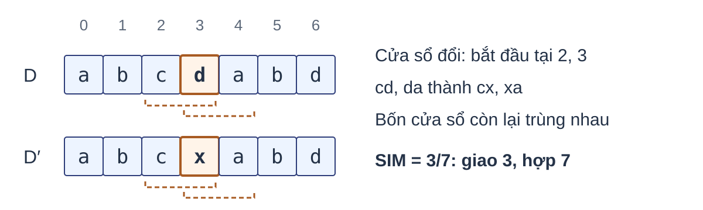
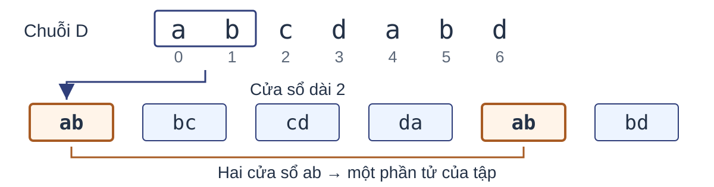
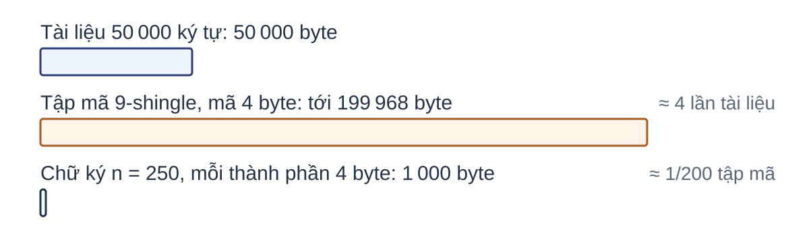
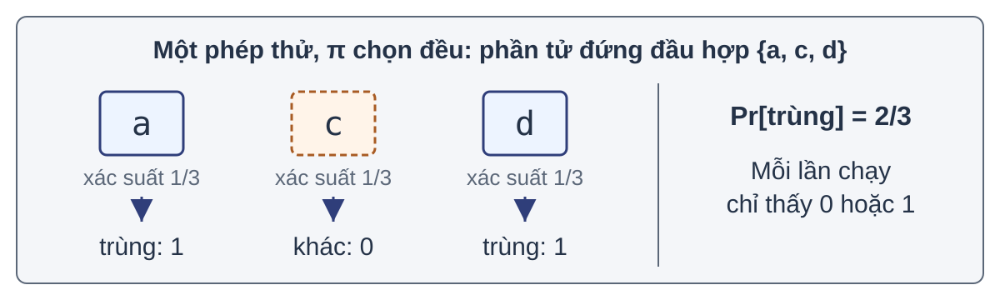
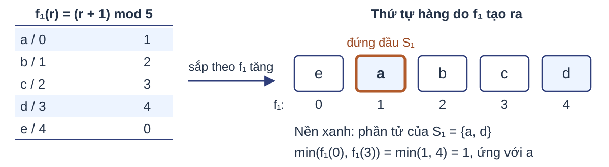
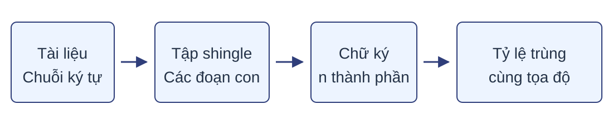

Biểu diễn tương đồng: Shingling và MinHash
Với hoán vị chọn đều, hai tập trùng MinHash với xác suất bằng Jaccard; chữ ký ngắn nhờ đó ước lượng được Jaccard.
Giải thuật nền tảng của Khoa học dữ liệu
Học kỳ 1 · Năm học 2026–2027
Trường Đại học Công nghệ · Đại học Quốc gia Hà Nội
Kho tài liệu có những bản gần trùng: trang phản chiếu, bản tin đăng lại, bài đạo văn. Bài 01 đã đặt bài toán tìm cặp gần trùng (Định nghĩa 01.10) và đếm số cặp khi xét mọi cặp (Ví dụ 01.8). Kết quả trung tâm của bài cần hai giả thiết: hoán vị được chọn đều, và cùng một hoán vị dùng cho cả hai tập. Phạm vi gồm độ tương đồng Jaccard, shingling và MinHash. Chữ ký giảm chi phí so một cặp; số cặp vẫn tăng bậc hai và được xử lý ở Bài 06.
Nguồn: Mining of Massive Datasets (MMDS), ấn bản 3, Chương 3, §§3.1–3.3, tr. 73–91.
Tiên quyết và quy ước
Nhắc lại: xét mọi cặp cần \(\binom C2=C(C-1)/2\) phép so; \(C=10^6\) cho \(499\,999\,500\,000\) cặp (Bài 01).
Nhắc lại: Jaccard \(\mathrm{SIM}(S,T)=|S\cap T|/|S\cup T|\), với \(S\cup T\ne\varnothing\) (Bài 01).
Nhắc lại: biến chỉ báo (indicator variable) có kỳ vọng \(p\), phương sai \(p(1-p)\); \(\mathbb E\bigl[\sum_iI_i\bigr]=\sum_i\mathbb E[I_i]\) không cần độc lập.
Ký hiệu: \(C\) tài liệu, tập \(S_1,\ldots,S_C\), ngưỡng \(t\); phần tử chữ đứng, như \(S_1=\{\mathrm a,\mathrm d\}\).
Quy ước: đếm vị trí, mã hàng từ 0; hạng, chỉ số cột, chỉ số hàm từ 1.
Bài 01 viết \(N\) tài liệu, \(C_i\) cho tập của tài liệu thứ \(i\) và ngưỡng \(\tau\); theo MMDS, ở đây \(C\) là số tài liệu, \(S_c\) là tập của tài liệu \(c\) và \(t\) là ngưỡng. Bài 01 còn dùng \(L\), \(R\), \(M\) cho cận số phần tử của một tập, tập kết quả và số khối của bộ nhớ chính; ở đây \(L=\operatorname{nnz}(M)\), \(R=|U|\) và \(M\) là ma trận đặc trưng. Tính tuyến tính cho kỳ vọng của ước lượng từ chữ ký mà không cần độc lập; phương sai của một tổng biến chỉ báo bằng tổng các phương sai khi thêm giả thiết độc lập.
Nguồn: ghi chú Bài 01, Định nghĩa 01.9, Thuật toán 01.11, Ví dụ 01.8; kỳ vọng và phương sai theo học phần Xác suất thống kê; MMDS 3e, §3.1.1, tr. 74.
Mục tiêu học tập
Tách số cặp và chi phí một cặp; đọc Jaccard theo cách chọn phần tử. Tạo tập shingle: tính đúng, chi phí; điều kiện mã giữ Jaccard. Lập ma trận đặc trưng; chứng minh xác suất trùng MinHash bằng Jaccard. Chứng minh ước lượng không chệch; đếm chi phí so chữ ký. Chọn \(n\) theo phương sai \(s(1-s)/n\). Chạy quét hàng; chứng minh bất biến; đếm thời gian, bộ nhớ. Kiểm \((\alpha r+\beta)\bmod R\) là hoán vị; nêu hậu quả khi vi phạm giả thiết. Các trang "Câu hỏi" cuối mỗi mạch kiểm mục tiêu của mạch đó. Năm bài sách ở phần bài tập vận dụng phủ các mục tiêu còn lại theo bảng của tệp bài tập: Bài tập 05.15 (MMDS Bài 3.1.1) cho mục tiêu 1, Bài tập 05.19 (Bài 3.2.3) cho mục tiêu 2, Bài tập 05.20 (Bài 3.3.1) cho mục tiêu 3; Bài tập 05.21 (Bài 3.3.2) và 05.22(a) cho mục tiêu 6; Bài tập 05.22(b) và (c) cho mục tiêu 7 và 4. Mục tiêu 5 không có bài sách tương ứng; câu hỏi về chữ ký MinHash và câu tự kiểm tra 4 kiểm nó.
Nội dung
Tài liệu gần trùng và độ tương đồng Jaccard Shingling văn bản MinHash theo hoán vị Chữ ký MinHash Tính chữ ký bằng hàm băm Tổng kết và tự kiểm tra Bài tập vận dụng Đọc trước: Leskovec, Rajaraman, Ullman, Mining of Massive Datasets (MMDS), ấn bản 3, Chương 3, §§3.1–3.3, tr. 73–91.
Jaccard là đại lượng cần đo giữa hai tập. Shingling chuyển mỗi văn bản thành một tập để áp dụng đại lượng ấy. MinHash nối Jaccard với xác suất hai tập chọn cùng một phần tử; nhiều MinHash ghép thành chữ ký ngắn. Chữ ký được tính bằng hàm băm trên mã hàng thay cho hoán vị, trong một lượt quét. Tổng kết đặt mỗi kết quả cạnh giả thiết của nó và đối chiếu chữ ký với kho một triệu tài liệu: bộ nhớ đã giảm, số cặp vẫn bậc hai. Năm bài của MMDS kiểm lại các định nghĩa, định lý và thuật toán.
Vấn đề trung tâm
Nhu cầu: ước lượng Jaccard mọi cặp trong \(10^6\) tài liệu, vừa bộ nhớ.
Mã không va chạm: Jaccard giữ nguyên; tập mã gấp bốn lần tài liệu. Hoán vị đều, dùng chung: MinHash trùng với xác suất bằng Jaccard. Mỗi hoán vị đều: không chệch; thêm độc lập: độ lệch chuẩn \(\le1/(2\sqrt n)\). Hàm băm thay hoán vị; quét hàng một lượt. Chữ ký giảm chi phí một cặp; số cặp vẫn bậc hai. Quy mô \(10^6\) tài liệu lấy từ MMDS, tr. 73 và Ví dụ 3.10, tr. 92. Theo mở đầu §3.3, tập mã shingle gấp khoảng bốn lần tài liệu: tài liệu \(50\,000\) byte cho tập mã khoảng \(200\,000\) byte, nên tập mã của cả kho chiếm khoảng \(2\cdot10^{11}\) byte. Dòng MinHash cần hoán vị chọn đều và dùng chung cho hai tập không rỗng. Dòng nhiều hoán vị cho ước lượng không chệch; với \(n\) hoán vị độc lập, độ lệch chuẩn không vượt \(1/(2\sqrt n)\). Dòng hàm băm thay hoán vị bằng hàm băm trên mã hàng. Dòng cuối là giới hạn còn lại: số cặp vẫn là \(\binom C2\).
Nguồn: MMDS 3e, tr. 73, mở §3.3, tr. 81; Ví dụ 3.10, tr. 92.
Bài toán tài liệu gần trùng
Nhu cầu: tìm tài liệu gần trùng (near-duplicate), như bản tin đăng lại có chèn câu.
Đầu vào: kho văn bản lớn, như trang Web hoặc bản tin.
Đầu ra: các cặp tài liệu có nhiều văn bản chung.
Kết luận: so từng ký tự chỉ nhận ra hai tài liệu trùng hoàn toàn.
Kho văn bản có ba kiểu gần trùng (mở đầu Chương 3, §3.1.2): trang phản chiếu chỉ đổi thông tin về máy chủ; bản tin được nhiều nơi đăng lại, có lược hoặc thêm đoạn; bài đạo văn đổi vài từ hoặc thứ tự câu. Hình là một bản tin đăng lại có chèn câu: bản đăng lại giữ nguyên hai câu của bản gốc và chèn một câu ở giữa. Hai chuỗi khác nhau ngay từ ký tự đầu của câu thứ hai, nên phép so từng ký tự kết luận hai tài liệu khác nhau dù hai trong ba câu là chung. Bài toán cần một số đo cho phần văn bản chung, tính trên tập các đoạn con ở mức ký tự.
Nguồn: Mining of Massive Datasets (MMDS), ấn bản 3, Chương 3, tr. 73–76.
Ví dụ: kho một triệu tài liệu
\(C=10^6\); tập mã khoảng \(50\,000\) mã 4 byte; chữ ký \(n=250\); so một cặp chữ ký mất 1 micro giây.
Tính chi phí một cặp và tổng phép so trên hai biểu diễn.
Đại lượng Tập mã Chữ ký So một cặp \(\le100\,000\) phép so \(250\) phép so Nhân \(499\,999\,500\,000\) cặp \(\approx5\cdot10^{16}\) \(\approx1{,}25\cdot10^{14}\)
Kết luận: trên chữ ký, \(499\,999{,}5\) giây \(\approx5{,}79\) ngày; chi phí một cặp giảm 400 lần.
Số cặp \(499\,999\,500\,000\) đã có ở Ví dụ 01.8; phần mới là chi phí một cặp trên hai biểu diễn. Hai tập mã lưu thành danh sách tăng ngặt; theo Bổ đề 01.14, thủ tục trộn tính giao và hợp bằng không quá \(50\,000+50\,000=100\,000\) phép so sánh. Hai chữ ký so bằng \(250\) phép so bằng, mỗi tọa độ một phép. Nhân với số cặp được khoảng \(5\cdot10^{16}\) và \(1{,}25\cdot10^{14}\). Kiểm tra lại: \(100\,000/250=400\) và \(1{,}25\cdot10^{14}\cdot400=5\cdot10^{16}\). Với 1 micro giây mỗi cặp chữ ký, tổng thời gian là \(499\,999{,}5\) giây. Biểu diễn ngắn giảm thừa số thứ hai; thừa số thứ nhất giữ bậc hai theo \(C\).
Nguồn: MMDS 3e, tr. 73 và tr. 81; giả định 1 micro giây mỗi cặp chữ ký theo Ví dụ 3.10, tr. 92; ghi chú Ví dụ 05.1.
Độ tương đồng Jaccard
Biểu diễn mỗi tài liệu bằng một tập phần tử; phần văn bản chung ứng với giao của hai tập.
\[\begin{aligned}|S\cap T|&=3\\|S\cup T|&=2+3+3=8\end{aligned}\]
Nhắc lại: độ tương đồng Jaccard của hai tập hữu hạn \(S,T\) với \(S\cup T\ne\varnothing\) (Bài 01) là
\[\mathrm{SIM}(S,T)=\frac{|S\cap T|}{|S\cup T|}=\frac38\]
Ý nghĩa: \(0\le\mathrm{SIM}(S,T)\le1\); bằng 0 khi hai tập rời nhau, bằng 1 khi \(S=T\).
Bài toán tài liệu gần trùng cần đại lượng đo phần văn bản chung, tính trên biểu diễn tập; đó là độ tương đồng Jaccard của Định nghĩa 01.9. Hình vẽ lại Hình 3.1 của MMDS, cũng là Ví dụ 01.6: hai phần tử chỉ thuộc \(S\), ba phần tử thuộc cả hai tập, ba phần tử chỉ thuộc \(T\); diện tích vùng không biểu diễn số lượng. Hợp đếm mỗi phần tử một lần, nên \(|S\cup T|=8\); tổng \(|S|+|T|=5+6=11\) đếm ba phần tử giao hai lần. Giao là tập con của hợp nên tỷ số không vượt 1; hai tập rời có tử số 0; khi \(S=T\ne\varnothing\), tử và mẫu bằng nhau. Nếu cả hai tập rỗng, biểu thức là \(0/0\), nên định nghĩa đòi hợp khác rỗng.
Nguồn: MMDS 3e, §3.1.1, tr. 74; hình vẽ lại theo Hình 3.1, tr. 75.
Ứng dụng của độ tương đồng Jaccard
Mỗi đối tượng là một tập; ứng dụng quyết định phần tử của tập.
Ứng dụng Phần tử của tập Mức Jaccard có ý nghĩa Văn bản đoạn văn bản trang phản chiếu: trên 90% Khách hàng mặt hàng đã mua 20% đã gợi ý sở thích gần nhau
Kết luận: ngưỡng \(t\approx0{,}9\) cho trang phản chiếu, \(t=0{,}2\) cho khách hàng; ngưỡng đi cùng cách chọn phần tử.
Trong lọc cộng tác (§3.1.3), một khách hàng là tập mặt hàng đã mua. MMDS dự đoán hai trang phản chiếu có Jaccard trên 90%, còn với hai khách hàng, Jaccard 20% có thể đã đủ bất thường để xem hai người có sở thích tương tự. Đặt ngưỡng của Định nghĩa 01.10 theo các mức này, ta có \(t\approx0{,}9\) cho trang phản chiếu và \(t=0{,}2\) cho khách hàng (Nhận xét 05.1). Với văn bản, phần tử phải giữ dấu vết các đoạn chung; shingling xác định các phần tử ấy. Tập hợp không lưu số lần một phần tử xuất hiện.
Nguồn: MMDS 3e, §§3.1.2–3.1.3, tr. 74–76.
Câu hỏi về độ tương đồng Jaccard
Câu hỏi:
Thêm vào \(T\) hai phần tử mới, không thuộc \(S\). Tính lại \(\mathrm{SIM}(S,T)\). Một lời giải lấy mẫu số \(5+6\) và cho \(3/11\). Chỉ ra đại lượng bị đếm sai. Hai văn bản cùng dài \(1\,000\) ký tự. Giải thích vì sao dữ kiện này chưa xác định Jaccard. Câu 1 và câu 3 là Bài tập 05.2. Câu 1 (định nghĩa Jaccard): giao vẫn có 3 phần tử, hợp có 10, nên \(\mathrm{SIM}=3/10\); giá trị giảm vì mẫu số tăng còn tử số giữ nguyên. Câu 2 (hợp đếm mỗi phần tử một lần): \(5+6\) là \(|S|+|T|\), đếm ba phần tử giao hai lần; mẫu số đúng là \(|S\cup T|=8\). Câu 3: độ dài chuỗi chỉ cho số ký tự, không cho biết phần tử nào thuộc giao hay hợp; cần quy tắc chuyển mỗi chuỗi thành một tập phần tử. Bài này dùng các đoạn con liên tiếp có độ dài cố định.
Nguồn: dữ kiện từ MMDS 3e, Hình 3.1, tr. 75.
2. Shingling văn bảnMuốn đo Jaccard giữa hai văn bản, phải biến mỗi văn bản thành tập các đoạn ký tự liên tiếp.
Tập shingle · Thuật toán tạo tập · Khoảng trắng và độ dài · Băm shingle · Mã không va chạm
Jaccard đã được định nghĩa trên hai tập; phép so từng ký tự chỉ nhận ra hai tài liệu trùng hoàn toàn. Mỗi tài liệu được biểu diễn bằng tập các \(k\)-shingle: định nghĩa, thuật toán tạo tập kèm tính đúng và chi phí, quy ước khoảng trắng, độ dài \(k\), rồi mã 4 byte giữ Jaccard khi không va chạm. Đầu ra là tập mã shingle; số mã vẫn gần bằng số ký tự của tài liệu, dẫn tới nhu cầu chữ ký ngắn.
Biểu diễn văn bản bằng tập shingle
Nhu cầu: hai tài liệu chung nhiều câu thì chung nhiều phần tử, kể cả khi các câu đổi chỗ.
Một \(k\)-shingle là đoạn \(k\) ký tự liên tiếp, nằm trong một cửa sổ (window) dài \(k\).

Kết luận: so từng ký tự, hai chuỗi khác từ vị trí 3; bốn trong sáu cửa sổ vẫn chung.
Bản tin đăng lại khác bản gốc từ ký tự đầu của câu thứ hai, nên hai chuỗi không bằng nhau. Cần một tập phần tử sao cho hai tài liệu chung nhiều câu hoặc cụm từ thì chung nhiều phần tử, kể cả khi các câu xuất hiện theo thứ tự khác. Hình là Ví dụ 05.3: abcdabd và abcxabd chỉ khác ở vị trí 3. Với \(k=2\), cửa sổ chứa vị trí 3 bắt đầu tại 2 và 3; bốn cửa sổ còn lại giống nhau, nên hai tập 2-shingle có giao 3, hợp 7 và Jaccard \(3/7\). Tổng quát, thay ký tự ở vị trí \(j_0\) chỉ đổi các cửa sổ bắt đầu từ \(\max(0,j_0-k+1)\) đến \(\min(j_0,\ell-k)\), nhiều nhất \(k\) cửa sổ.
Nguồn: MMDS 3e, mở §3.2 và §3.2.1, tr. 78.
Ví dụ: tập 2-shingle của abcdabd
\[D=\texttt{abcdabd},\qquad k=2\]
Tính tập \(S_2(D)\): liệt kê các cửa sổ, giữ mỗi đoạn một lần.

\[S_2(D)=\{\texttt{ab},\texttt{bc},\texttt{cd},\texttt{da},\texttt{bd}\}\]
Kết luận: sáu cửa sổ cho năm phần tử vì ab lặp lại.
Chuỗi có bảy ký tự và sáu vị trí bắt đầu \(j=0,\ldots,5\) cho cửa sổ hai ký tự. Cửa sổ ở vị trí 0 và cửa sổ ở vị trí 4 cùng là ab, nên phép chèn vào tập ở vị trí 4 không tăng kích thước tập. Kết quả có năm phần tử phân biệt; hiệu giữa số cửa sổ và số phần tử bằng một, đúng số lần lặp của ab. Thứ tự liệt kê trong tập không biểu thị thứ tự xuất hiện.
Nguồn: MMDS 3e, Ví dụ 3.3, tr. 78; ghi chú Ví dụ 05.2.
Ví dụ: tập 2-shingle của abcdabd, các phép chèn
Tính tập \(S\) sau mỗi phép chèn cửa sổ \(D[j:j+2]\), \(j=0,\ldots,5\).
\(j\) Cửa sổ Tập sau phép chèn 0 ab{ab} 1 bc{ab, bc} 2 cd{ab, bc, cd} 3 da{ab, bc, cd, da} 4 ab{ab, bc, cd, da} 5 bd{ab, bc, cd, da, bd}
Bảng là phần "Các cửa sổ" của Ví dụ 05.2: duyệt vị trí bắt đầu từ trái sang phải và chèn từng cửa sổ vào một tập. Cột cuối ghi tập sau khi chèn cửa sổ của dòng đó. Ở \(j=4\), cửa sổ ab đã có trong tập nên tập không lớn thêm; đó là thao tác "giữ một bản mỗi chuỗi" của phép chèn. Kiểm tra lại: sáu cửa sổ, năm phần tử phân biệt; hiệu bằng một, đúng số lần lặp của ab. Bảng này là một lượt chạy tay của thuật toán tạo tập shingle: mỗi dòng là trạng thái của tập sau một vòng lặp.
Nguồn: MMDS 3e, Ví dụ 3.3, tr. 78; ghi chú Ví dụ 05.2.
Định nghĩa tập shingle
Định nghĩa. Với chuỗi \(D\) dài \(\ell\) và \(k\ge1\), cửa sổ tại \(j\) là \(D[j:j+k]\), gồm các vị trí \(j,\ldots,j+k-1\).
Tập \(k\)-shingle (còn gọi là \(k\)-gram) của \(D\) là
\[S_k(D)=\{D[j:j+k]:0\le j\le\ell-k\}\]
Với \(D=\texttt{abcdabd}\): \(\ell=7\), \(k=2\), \(j=0,\ldots,5\); \(D[3:5]=\texttt{da}\).
Số cửa sổ là \(w=\max(0,\ell-k+1)\), nên \(|S_k(D)|\le w\) (Định nghĩa 05.2).
Trường hợp biên: nếu \(\ell<k\), không có cửa sổ hợp lệ và \(S_k(D)=\varnothing\).
Có \(\ell-k+1\) vị trí hợp lệ khi \(k\le\ell\); với \(\ell=7\), \(k=2\), đó là sáu vị trí 0 đến 5. Đoạn \(D[3:5]\) lấy vị trí 3 và 4, tức d và a; vị trí \(j+k\) không được lấy. Một phần tử của tập là chuỗi con, không phải chỉ số vị trí. Mỗi cửa sổ cho nhiều nhất một phần tử, nên \(|S_k(D)|\le w\); dấu bằng xảy ra khi và chỉ khi các cửa sổ đôi một khác nhau. Tài liệu ngắn hơn \(k\) cho tập rỗng, trong khi định lý MinHash cần tập không rỗng (Tình huống 05.2).
Nguồn: MMDS 3e, §3.2.1, tr. 78; ghi chú Định nghĩa 05.2.
Thuật toán: tạo tập shingle
Đầu vào: chuỗi \(D\) dài \(\ell\); số nguyên \(k\ge1\). Đầu ra: \(S_k(D)\).
S ← ∅
for j = 0, …, ℓ − k:
chèn D[j:j+k] vào S
return SThao tác quyết định là phép chèn vào tập, giữ một bản mỗi chuỗi (Thuật toán 05.3).
Giả thiết: \(S\) là bảng băm các chuỗi; chèn một chuỗi dài \(k\) tốn \(O(k)\) kỳ vọng.
Điều kiện dừng: vòng lặp chạy đúng \(w=\max(0,\ell-k+1)\) lần.
Bảng của ví dụ abcdabd là một lượt chạy tay: duyệt vị trí bắt đầu từ trái sang phải và chèn từng cửa sổ vào một tập. Giả mã làm đúng việc đó; với abcdabd và \(k=2\), vòng lặp chạy \(j=0,\ldots,5\), và trạng thái của \(S\) sau mỗi vòng là cột cuối của bảng. Nếu \(\ell<k\), vòng lặp không chạy lần nào và thuật toán trả \(\varnothing\). Quy ước khoảng trắng của \(D\) được chọn trước khi chạy thuật toán. Thuật toán để ngỏ cấu trúc cài tập; giả thiết bảng băm quyết định cả tính đúng (một bản mỗi chuỗi) và chi phí.
Nguồn: MMDS 3e, §3.2.1, tr. 78; ghi chú Thuật toán 05.3.
Tính đúng: tạo tập shingle
Bất biến: bất biến vòng lặp (loop invariant) sau \(q\) vòng là
\[S=\{D[j:j+k]:0\le j<q\}\]
Khởi tạo: \(q=0\), hai vế đều rỗng. Duy trì: vòng \(q+1\) chèn \(D[q:q+k]\); phép chèn giữ một bản mỗi chuỗi. Kết thúc: \(q=w\) cho \(S=S_k(D)\); mỗi vòng thêm nhiều nhất một phần tử, nên \(|S|\le w\). Lưu ý: nếu \(S\) là danh sách nối thêm, abcdabd cho sáu phần tử, ab hai lần.
Đây là phần (a) và (b) của Mệnh đề 05.4. Khi \(q=0\), bước khởi tạo đặt \(S=\varnothing\) và vế phải không có chỉ số nào. Vòng thứ \(q+1\) chèn đúng cửa sổ bắt đầu tại \(q\); phép chèn giữ đúng một bản của mỗi chuỗi, nên sau vòng đó \(S=\{D[j:j+k]:0\le j<q+1\}\). Vòng lặp chạy đúng \(w\) lần, với \(w=\ell-k+1\) khi \(k\le\ell\) và \(w=0\) khi \(\ell<k\); khi dừng, bất biến cho đúng định nghĩa \(S_k(D)\). Phản ví dụ ở dòng cuối cho thấy giả thiết "giữ một bản" là cần: danh sách nối thêm trả danh sách \(w\) cửa sổ, không phải tập.
Nguồn: ghi chú Mệnh đề 05.4 và chứng minh; MMDS 3e, §3.2.1.
Chi phí: tạo tập shingle
Mô hình: tạo một cửa sổ dài \(k\) tốn \(O(k)\); chèn vào bảng băm tốn \(O(k)\) kỳ vọng.
Bước Số lần Chi phí mỗi lần Đóng góp Khởi tạo \(S\) \(1\) \(O(1)\) \(O(1)\) Tạo và chèn cửa sổ \(w\) \(O(k)\) kỳ vọng \(O(wk)\) kỳ vọng Trả \(S\) \(1\) \(O(1)\) \(O(1)\)
Thời gian kỳ vọng \(O(1+wk)\) (Mệnh đề 05.4); bộ nhớ \(O(k\,|S_k(D)|)\) ký tự, chưa tính đầu vào.
Ví dụ. \(\ell=50\,000\), \(k=9\): \(w=49\,992\) vòng, \(wk=449\,928\) lần đọc ký tự.
Kỳ vọng lấy theo hàm băm của bảng băm; chi phí \(O(k)\) của một phép chèn là giả thiết về cấu trúc dữ liệu, và tổng kỳ vọng cộng được nhờ tính tuyến tính của kỳ vọng. Hệ số \(k\) giữ lại vì \(k\) là tham số. Bỏ giả thiết chèn \(O(k)\) kỳ vọng thì chi phí đổi bậc: nếu kiểm trùng bằng cách so cửa sổ mới với mọi phần tử đã có, vòng thứ \(q+1\) tốn tới \(O(qk)\), và với các cửa sổ đôi một khác nhau tổng là \(O(w^2k)\). Với tài liệu \(50\,000\) ký tự, tập có không quá \(49\,992\) phần tử; lưu mỗi phần tử bằng 9 byte thì tập chiếm tới \(449\,928\) byte, khoảng chín lần dung lượng tài liệu.
Nguồn: ghi chú Thuật toán 05.3 (bảng chi phí), Mệnh đề 05.4(c) và mục "Trong thực hành" của Mục 2.2.
Xử lý khoảng trắng
Hai câu khác nội dung: …ready for touch down, …scored a touchdown.
Quy ước: \(k=9\); mỗi dãy ký tự trắng thành một dấu cách, và dấu cách là một ký tự.
Chuỗi Độ dài Các cửa sổ touch down10 touch dow, ouch downtouchdown9 touchdown
Kết luận: nếu xóa hết khoảng trắng, hai câu khác nội dung chung shingle touchdown.
Hai câu của Ví dụ 3.4 là “The plane was ready for touch down” và “The quarterback scored a touchdown”. Khi giữ dấu cách, câu đầu có touch dow, ouch down, câu sau có touchdown, nên hai tập không chung các shingle này. Khi xóa khoảng trắng, hai câu có shingle chung dù nội dung khác nhau. Thay một dãy ký tự trắng bằng một dấu cách vẫn phân biệt shingle phủ hai từ với shingle nằm trong một từ, đồng thời bỏ khác biệt về số dấu cách, tab hay xuống dòng. Quy ước đã chọn phải dùng chung cho cả kho trước khi tạo shingle.
Nguồn: MMDS 3e, Ví dụ 3.4, tr. 78; §3.2.1; ghi chú Ví dụ 05.4, Nhận xét 05.5.
Chọn độ dài shingle
Với \(k=1\), hầu hết trang Web chứa hầu hết ký tự thông dụng: mọi cặp có Jaccard cao.
26 chữ cái và dấu cách cho \(27^5=14\,348\,907\) chuỗi dài 5, lớn hơn nhiều độ dài một thư điện tử.
Tài liệu \(k\) theo MMDS Thư điện tử \(k=5\) Tài liệu dài \(k=9\)
Kết luận: chọn \(k\) để một shingle cho trước ít xuất hiện trong một tài liệu.
Nếu \(k\) quá nhỏ, phần lớn chuỗi \(k\) ký tự xuất hiện trong phần lớn tài liệu, nên hai tài liệu không chung câu nào vẫn có Jaccard cao. Với 26 chữ cái và một ký tự trắng, có \(27^5\) chuỗi dài 5. Các ký tự không xuất hiện với cùng xác suất, nên MMDS ước lượng số \(k\)-shingle khả dĩ bằng \(20^k\), như thể chỉ có 20 ký tự. Tiêu chí của sách là chọn \(k\) đủ lớn để xác suất một shingle cho trước xuất hiện trong một tài liệu cho trước là thấp. 5 và 9 là giá trị MMDS dùng cho thư điện tử và tài liệu dài như bài báo khoa học. Hai tài liệu chỉ so được với nhau khi dùng cùng quy ước khoảng trắng và cùng \(k\).
Nguồn: MMDS 3e, §3.2.2, tr. 79; ghi chú Nhận xét 05.5.
Băm shingle
Hàm băm \(g\) đưa mỗi 9-shingle vào \(\{0,\ldots,2^{32}-1\}\); mã 4 byte thay chuỗi 9 byte.
Phần tử Dung lượng Số giá trị khả dĩ 4-shingle 4 byte \(\approx20^4=160\,000\) (20 ký tự thông dụng) Mã của 9-shingle 4 byte gần \(2^{32}\)
Lưu ý: va chạm (collision) là hai shingle khác nhau nhận cùng mã.
Kết luận: cùng 4 byte, mã 9-shingle phân biệt tài liệu tốt hơn 4-shingle.
Theo §3.2.3, thay vì dùng chuỗi con làm phần tử, một hàm băm ánh xạ chuỗi dài \(k\) vào các thùng và số thùng làm phần tử. Với 9-shingle và \(2^{32}\) thùng, mỗi phần tử chiếm 4 byte thay vì 9 và được so bằng một thao tác trên từ máy; độ dài shingle vẫn là \(k=9\). Dùng trực tiếp 4-shingle cũng tốn 4 byte, nhưng \(20^4=160\,000\) chuỗi có khả năng xuất hiện chỉ chiếm khoảng \(3{,}7\cdot10^{-5}\) của \(2^{32}\) giá trị, nên mọi tài liệu dồn phần tử vào cùng một nhóm nhỏ giá trị. Số 9-shingle có khả năng xuất hiện, khoảng \(20^9=5{,}12\cdot10^{11}\), vượt xa \(2^{32}\); sau khi băm, gần như mọi mã 4 byte đều có thể gặp. Đổi lại, \(g\) không đơn ánh trên toàn miền, nên có va chạm.
Nguồn: MMDS 3e, §3.2.3, tr. 79–80; ghi chú Mục 2.4.
Mã không va chạm bảo toàn Jaccard
Mệnh đề. \(S,T\) là hai tập chuỗi dài \(k\), \(S\cup T\ne\varnothing\); cùng hàm \(g\) cho hai tập, \(g\) đơn ánh trên \(S\cup T\). Khi đó
\[\mathrm{SIM}\bigl(g(S),g(T)\bigr)=\mathrm{SIM}(S,T)\]
Chứng minh. \(g(S\cup T)=g(S)\cup g(T)\) với mọi \(g\); đơn ánh cho \(g(S\cap T)=g(S)\cap g(T)\) và giữ số phần tử.
Ví dụ. \(S=\{\texttt{ab},\texttt{bc},\texttt{cd}\}\), \(T=\{\texttt{ab}\}\): \(\mathrm{SIM}=1/3\); nếu \(g(\texttt{bc})=g(\texttt{cd})\ne g(\texttt{ab})\), Jaccard trên tập mã là \(1/2\).
Đây là Mệnh đề 05.6. Bước hợp đúng với mọi hàm, vì một mã thuộc \(g(S\cup T)\) khi và chỉ khi nó là mã của một phần tử thuộc \(S\) hoặc thuộc \(T\). Bước giao cần đơn ánh: nếu \(z\in g(S)\cap g(T)\) thì có \(a\in S\), \(b\in T\) với \(g(a)=g(b)=z\); đơn ánh trên \(S\cup T\) cho \(a=b\in S\cap T\). Đơn ánh còn cho \(|g(A)|=|A|\) với mọi tập con \(A\) của \(S\cup T\), nên tử và mẫu giữ nguyên. Chỉ cần đơn ánh trên \(S\cup T\) của cặp đang xét: trên mọi chuỗi dài 9, \(g\) không thể đơn ánh vì \(27^9\approx7{,}6\cdot10^{12}>2^{32}\). Bỏ giả thiết cùng một \(g\): \(S=T=\{\texttt{ab}\}\) mã bằng hai hàm khác nhau cho Jaccard 0 thay cho 1. Ở ví dụ, \(g(S)\) có hai mã, \(g(T)\) có một mã chung với \(g(S)\).
Nguồn: ghi chú Mệnh đề 05.6 và chứng minh; MMDS 3e, §3.2.3.
Câu hỏi về shingling
Câu hỏi:
Với abcdabd và \(k=3\), liệt kê các cửa sổ và tập \(S_3(D)\). Chuỗi abcdabc chỉ khác abcdabd ở ký tự cuối. Với \(k=2\), tính Jaccard của hai tập shingle. Tài liệu \(50\,000\) ký tự, \(k=9\), mã 4 byte, không cửa sổ nào trùng mã: tính số mã và số byte. Câu 1: có \(\ell-k+1=5\) cửa sổ abc, bcd, cda, dab, abd; cả năm khác nhau nên \(|S_3(D)|=5\). Câu 2 (Bài tập 05.3(b)): abcdabc có các cửa sổ ab, bc, cd, da, ab, bc, nên tập là \(\{\texttt{ab},\texttt{bc},\texttt{cd},\texttt{da}\}\). Giao với \(S_2(D)\) có 4 phần tử, hợp có 5 (thêm bd), nên Jaccard bằng \(4/5\). Ký tự cuối chỉ thuộc một cửa sổ, nên thay nó chỉ đổi một cửa sổ. Câu 3: có \(w=50\,000-9+1=49\,992\) cửa sổ, nên tập có \(49\,992\) mã và chiếm \(199\,968\) byte, cỡ bốn lần dung lượng tài liệu. Bỏ giả thiết không trùng mã thì \(49\,992\) chỉ là cận trên; cửa sổ lặp hoặc va chạm làm tập nhỏ hơn.
Nguồn: MMDS 3e, Ví dụ 3.3, §3.2.3 và mở §3.3; ghi chú Bài tập 05.3, Mục 2.4.
3. MinHash theo hoán vịMuốn thay mỗi tập bằng một đại lượng ngắn, phải tìm giá trị mà xác suất trùng bằng Jaccard.
Ma trận đặc trưng · Hoán vị hàng · Ba loại hàng · Phần tử đứng đầu · Xác suất trùng
Tập mã shingle của tài liệu \(50\,000\) byte vẫn chiếm tới \(199\,968\) byte. Các tập được xếp thành cột của ma trận đặc trưng; MinHash là phần tử đứng đầu của tập theo một hoán vị, tính được trên ví dụ bốn tập. Phần tử đứng đầu hợp phân phối đều, và ba loại hàng của một cặp cột cho xác suất hai MinHash trùng bằng Jaccard. Một MinHash chỉ cho trùng hoặc không trùng; nhiều MinHash được ghép lại thành chữ ký.
Kích thước tập mã shingle
Nhu cầu: thay mỗi tập bằng chữ ký có độ dài chọn trước, vẫn ước lượng được Jaccard.
\(|S_k(D)|\le w\): mã 4 byte, nhưng số phần tử vẫn gần bằng số ký tự.

Kết luận: \(10^6\) tập mã chiếm khoảng \(2\cdot10^{11}\) byte; \(10^6\) chữ ký \(n=250\) chiếm \(10^9\) byte.
Shingling và phép băm cho mỗi tài liệu một tập mã 4 byte; giới hạn còn lại là số phần tử của tập. Mỗi cửa sổ tạo nhiều nhất một phần tử, nên tập mã của tài liệu \(50\,000\) ký tự với \(k=9\) có không quá \(49\,992\) mã, tức \(199\,968\) byte, khoảng bốn lần dung lượng tài liệu như MMDS nêu ở mở đầu §3.3. Với hàng triệu tài liệu, các tập mã có thể không vừa bộ nhớ chính. Chữ ký cần có số thành phần chọn trước, không phụ thuộc kích thước tập, và từ hai chữ ký phải ước lượng được Jaccard của hai tập. Thanh thứ ba của hình là chữ ký \(n=250\) dùng xuyên suốt bài.
Nguồn: MMDS 3e, mở §3.3, tr. 81; Ví dụ 3.10, tr. 92; ghi chú mở đầu Mục 3.
Ma trận đặc trưng của bốn tập
Phần tử / \(r\) \(S_1\) \(S_2\) \(S_3\) \(S_4\) a / 0 1 0 0 1 b / 1 0 0 1 0 c / 2 0 1 0 1 d / 3 1 0 1 1 e / 4 0 0 1 0
\(U=\{\mathrm a,\ldots,\mathrm e\}\); \(R=5\) hàng, \(C=4\) cột.
Định nghĩa. Ma trận đặc trưng (characteristic matrix) \(M\): \(M(r,c)=1\) khi phần tử mã \(r\) thuộc \(S_c\), \(0\) nếu không.
\(L=\operatorname{nnz}(M)\) là số ô 1; ở đây \(L=9\).
Biểu diễn theo hàng: với mỗi \(r\), danh sách cột có 1; hàng a: 1, 4.
Đây là Ví dụ 05.5 và Định nghĩa 05.7. Cột ứng với tập, hàng ứng với phần tử của vũ trụ: \(S_1=\{\mathrm a,\mathrm d\}\), \(S_2=\{\mathrm c\}\), \(S_3=\{\mathrm b,\mathrm d,\mathrm e\}\), \(S_4=\{\mathrm a,\mathrm c,\mathrm d\}\), gọi là ví dụ bốn tập đặc trưng. Mã hàng \(r=0,\ldots,4\) là tên số của a, …, e. Jaccard đọc được trên hai cột: tử số đếm các hàng có 1 ở cả hai cột, mẫu số đếm các hàng có 1 ở ít nhất một cột. Ma trận thực tế rất thưa, nên dữ liệu được lưu bằng vị trí các ô 1. Biểu diễn theo hàng của ví dụ: a/0: 1, 4; b/1: 3; c/2: 2, 4; d/3: 1, 3, 4; e/4: 3; tổng độ dài \(L=2+1+2+3+1=9\), so với \(RC=20\) ô của ma trận đặc.
Nguồn: MMDS 3e, §3.3.1, Hình 3.2, tr. 81–82.
Ý tưởng của MinHash
Nhu cầu: đại diện mỗi tập bằng một phần tử, chọn theo cùng quy tắc cho mọi tập.
Xếp \(U\) theo một hoán vị (permutation) chung cho mọi tập. Mỗi tập không rỗng giữ phần tử đứng đầu của nó. Kết luận: hai tập chọn cùng phần tử khi và chỉ khi phần tử đầu của hợp thuộc giao.
Chữ ký cần ngắn và vẫn giữ liên hệ với Jaccard; hình dùng ví dụ bốn tập đặc trưng. MinHash thay cả tập bằng một phần tử đại diện, chọn bằng cùng một quy tắc: xếp \(U\) theo một thứ tự rồi lấy phần tử đứng đầu của tập. Thứ tự phải chung cho mọi tập, vì hai tập chỉ so được với nhau dưới cùng một phép thử. Với hai tập, phần tử ngoài hợp không thuộc tập nào nên không thể được chọn. Nếu phần tử đầu của hợp thuộc giao, nó cũng đứng đầu từng tập. Nếu nó chỉ thuộc một tập, tập đó chọn nó còn tập kia chọn phần tử khác. Khi thứ tự được chọn ngẫu nhiên, xác suất chọn trùng là xác suất phần tử đầu của hợp thuộc giao.
Nguồn: MMDS 3e, §3.3.2–§3.3.3, tr. 82–83.
Ví dụ: bốn tập đặc trưng, một hoán vị
Thứ tự hàng \((\mathrm b,\mathrm e,\mathrm a,\mathrm d,\mathrm c)\). Tính MinHash của bốn tập: ô 1 đầu tiên của mỗi cột.
Thứ tự hàng \(S_1\) \(S_2\) \(S_3\) \(S_4\) b 0 0 1 0 e 0 0 1 0 a 1 0 0 1 d 1 0 1 1 c 0 1 0 1
Đại lượng \(S_1\) \(S_2\) \(S_3\) \(S_4\) Định danh a c b a Vị trí (từ 1) 3 5 1 3
Kết luận: \(S_1\), \(S_4\) cùng chọn \(\mathrm a\); giá trị MinHash là định danh, không là vị trí.
Đây là Ví dụ 05.6. Ô viền đậm, chữ đậm là ô 1 đầu tiên của mỗi cột. \(S_1\) không chứa b, e nên gặp a đầu tiên ở vị trí thứ ba. \(S_2\) chỉ chứa c nên gặp ở vị trí thứ năm. \(S_3\) chứa b nên dừng ngay tại vị trí thứ nhất. \(S_4\) gặp a trước d và c, nên cũng chọn a. Kiểm tra lại: phần tử đứng đầu của mỗi tập thuộc tập đó, và mọi phần tử khác của tập đứng sau nó. Định danh a và vị trí 3 là hai đại lượng khác nhau; vị trí cho biết phép quét dừng ở hàng nào.
Nguồn: MMDS 3e, Ví dụ 3.7, Hình 3.3, tr. 82–83.
Định nghĩa MinHash
Giả thiết: \(U\) hữu hạn, \(S\subseteq U\), \(S\ne\varnothing\); \(\pi\) là một hoán vị của \(U\).
Định nghĩa. Hạng (rank) \(\operatorname{rank}_\pi(u)\) là vị trí, đếm từ 1, của \(u\) trong \(\pi\); MinHash của \(S\) là
\[h_\pi(S)=\arg\min_{u\in S}\operatorname{rank}_\pi(u)\]
Với \(\pi=(\mathrm b,\mathrm e,\mathrm a,\mathrm d,\mathrm c)\): \(h_\pi(S_1)=\mathrm a\), còn \(\operatorname{rank}_\pi(\mathrm a)=3\) (Định nghĩa 05.8).
Lưu ý: cùng \(\pi\) cho mọi tập; các hạng khác nhau nên phần tử đạt hạng nhỏ nhất là duy nhất.
Hàm \(h_\pi\) nhận một tập và trả một phần tử của \(U\); \(\arg\min\) trả phần tử đạt hạng nhỏ nhất, không trả giá trị hạng. Điều kiện \(S\ne\varnothing\) là cần: với tập rỗng, tập lấy cực tiểu rỗng và \(h_\pi(\varnothing)\) không xác định. Theo định nghĩa ma trận đặc trưng, \(h_\pi(S_c)\) là phần tử ứng với ô 1 đầu tiên của cột \(c\) khi các hàng được xếp theo \(\pi\). MMDS gọi giá trị này là số hiệu của hàng đầu tiên, theo thứ tự đã hoán vị, mà cột có 1. Ghi hạng thay định danh cũng được: dưới cùng \(\pi\), hạng và định danh tương ứng một–một, nên quan hệ hai MinHash bằng nhau không đổi.
Nguồn: MMDS 3e, §3.3.2, tr. 82; ghi chú Định nghĩa 05.8.
Ba loại hàng của một cặp cột
Loại hàng Hai cột \(\mathrm X\) \((1,1)\) \(\mathrm Y\) \((1,0)\) hoặc \((0,1)\) \(\mathrm Z\) \((0,0)\)
\(x\), \(y\) là số hàng loại \(\mathrm X\), \(\mathrm Y\): \(x=|S\cap T|\), \(x+y=|S\cup T|\).
Ví dụ. Cặp \(S_1,S_4\): \(x=2\), \(y=1\), \(\mathrm{SIM}=2/3\).
Đây là Ví dụ 05.7. Với \(S_1\), \(S_4\): a, d thuộc giao (loại \(\mathrm X\)), c thuộc đúng một tập (loại \(\mathrm Y\)), b, e ngoài hợp (loại \(\mathrm Z\)); kiểm tra lại \(x+y+2=5=R\). Hàng \(\mathrm Z\) không chứa phần tử của hai tập nên không bao giờ được chọn. Gọi \(u\) là phần tử đứng đầu hợp: \(u\) thuộc \(\mathrm X\) thì cả hai cột chọn cùng hàng; \(u\) thuộc \(\mathrm Y\) thì chỉ một cột có phần tử đó. Quan hệ này đúng với mọi hoán vị; muốn có đẳng thức xác suất, cần phân phối của \(u\). Biến \(x\) đếm số hàng, không phải chỉ số của một hàng.
Nguồn: MMDS 3e, §3.3.3, tr. 83.
Phần tử đứng đầu phân phối đều
Bổ đề. \(A\subseteq U\), \(A\ne\varnothing\); \(\pi\) chọn đều trong \(R!\) hoán vị. Với mỗi \(a\in A\),
\[\Pr\bigl[h_\pi(A)=a\bigr]=\frac1{|A|}\]
Chứng minh. Gọi \(\Pi_a\) là tập các hoán vị có \(h_\pi(A)=a\).
Bước 1: với \(a'\in A\), đổi chỗ \(a\) và \(a'\) là một song ánh \(\Pi_a\to\Pi_{a'}\), nên \(|\Pi_a|=|\Pi_{a'}|\).
Bước 2: các \(\Pi_a\), \(a\in A\), phân hoạch \(R!\) hoán vị thành \(|A|\) phần cùng cỡ.
Bước 3: \(\Pr[h_\pi(A)=a]=|\Pi_a|/R!=1/|A|\). \(\square\)
Đây là Bổ đề 05.9, chỗ duy nhất dùng tính đều của \(\pi\). Bước 1: lấy \(\pi\in\Pi_a\) và đổi chỗ \(a\), \(a'\) trong thứ tự liệt kê; \(a'\) chiếm vị trí cũ của \(a\), còn \(a\) chiếm vị trí cũ của \(a'\), đứng sau vị trí cũ của \(a\), mọi phần tử khác giữ vị trí. Do đó \(a'\) đứng trước mọi phần tử khác của \(A\). Đổi chỗ hai lần cho lại \(\pi\), nên phép đổi là song ánh. Bước 2: vì \(A\ne\varnothing\), mỗi hoán vị có đúng một phần tử của \(A\) đứng đầu, nên mỗi phần có \(R!/|A|\) hoán vị. Kiểm tra trên \(A=S_1\cup S_4=\{\mathrm a,\mathrm c,\mathrm d\}\) với \(R=5\): mỗi phần tử đứng đầu hợp ở \(120/3=40\) hoán vị; a và d cho \(80\) hoán vị trùng, c cho \(40\) hoán vị khác.
Nguồn: ghi chú Bổ đề 05.9 và chứng minh; Bài tập 05.20(b).
Định lý xác suất trùng MinHash
Định lý. \(S,T\subseteq U\) không rỗng; cùng \(\pi\) chọn đều trong \(R!\) hoán vị. Khi đó
\[\Pr[h_\pi(S)=h_\pi(T)]=\mathrm{SIM}(S,T)\]
Chứng minh. Gọi \(u\) là phần tử đứng đầu \(S\cup T\); theo bổ đề, \(u\) phân phối đều trên \(S\cup T\).
\(u\in S\cap T\): hai MinHash bằng \(u\); \(u\in S\setminus T\): \(h_\pi(S)=u\), còn \(h_\pi(T)\in T\) khác \(u\).
\[\Pr[h_\pi(S)=h_\pi(T)]=\Pr[u\in S\cap T]=\frac{x}{x+y}\]
Đây là Định lý 05.10. Đặt \(A=S\cup T\), khác rỗng. Bước 1 dùng Bổ đề 05.9: mỗi phần tử của hợp đứng đầu với xác suất \(1/(x+y)\). Bước 2: nếu \(u\in S\), mọi phần tử của \(S\) thuộc \(A\) nên có hạng không nhỏ hơn hạng của \(u\), do đó \(h_\pi(S)=u\); trường hợp \(u\in T\setminus S\) đối xứng. Biến cố trùng vì vậy trùng với biến cố \(u\in S\cap T\), có \(x\) phần tử thuận lợi trong \(x+y\). Lập luận bao gồm hai tập rời (\(x=0\)) và hai tập bằng nhau (\(y=0\)). Bỏ "cùng \(\pi\)": so \(S_1\) với chính nó dưới hai hoán vị độc lập, mỗi MinHash là a hoặc d với xác suất \(1/2\), nên xác suất trùng là \(1/2<1\). Bỏ "chọn đều": thứ tự cố định \((\mathrm b,\mathrm e,\mathrm a,\mathrm d,\mathrm c)\) cho \(S_1\), \(S_4\) trùng với xác suất 1, khác \(2/3\).
Nguồn: MMDS 3e, §3.3.3, tr. 83; ghi chú Định lý 05.10, Ví dụ 05.8.
Câu hỏi về MinHash
\[S_1=\{\mathrm a,\mathrm d\},\qquad S_4=\{\mathrm a,\mathrm c,\mathrm d\},\qquad U=\{\mathrm a,\mathrm b,\mathrm c,\mathrm d,\mathrm e\}\]
Câu hỏi:
Nêu một thứ tự của \(U\) làm \(h_\pi(S_1)\ne h_\pi(S_4)\); chỉ ra phần tử đứng đầu hợp. Đặt \(S_1'=S_1\cup\{\mathrm e\}\). Tính \(\Pr[h_\pi(S_1')=h_\pi(S_4)]\) khi \(\pi\) chọn đều. Giải thích vì sao vị trí của \(\mathrm c\) không ảnh hưởng tới biến cố \(h_\pi(S_1)=h_\pi(S_3)\), với \(S_3=\{\mathrm b,\mathrm d,\mathrm e\}\). Câu 1: cần c đứng trước cả a và d, chẳng hạn \((\mathrm c,\mathrm a,\mathrm b,\mathrm d,\mathrm e)\); khi đó \(h_\pi(S_1)=\mathrm a\) còn \(h_\pi(S_4)=\mathrm c\). Phần tử đứng đầu hợp \(\{\mathrm a,\mathrm c,\mathrm d\}\) là c, thuộc phần riêng của \(S_4\). Câu 2 (Bài tập 05.6): \(S_1'\cap S_4=\{\mathrm a,\mathrm d\}\), \(S_1'\cup S_4=\{\mathrm a,\mathrm c,\mathrm d,\mathrm e\}\), nên xác suất bằng \(2/4=1/2\); e mở rộng hợp mà không thuộc giao. Câu 3: \(S_1\cup S_3=\{\mathrm a,\mathrm b,\mathrm d,\mathrm e\}\) không chứa c, nên với cặp này c là hàng loại \(\mathrm Z\); phần tử ngoài hợp không thể được chọn, nên vị trí của nó không đổi phần tử đầu của hợp.
Nguồn: dữ kiện từ MMDS 3e, Hình 3.2 và §3.3.3.
4. Chữ ký MinHashMuốn ước lượng Jaccard đủ chính xác, phải lặp MinHash với nhiều hoán vị và đếm tỷ lệ trùng.
Ma trận chữ ký · Tỷ lệ trùng · Kỳ vọng · Chi phí so sánh · Phương sai
Định lý xác suất trùng cho một phép thử với kết quả trùng hoặc không trùng. Chữ ký gồm \(n\) MinHash theo cùng bộ hoán vị; tỷ lệ tọa độ trùng ước lượng Jaccard không chệch, so hai chữ ký tốn \(n\) phép so bằng, và khi các hoán vị độc lập, độ lệch chuẩn không vượt \(1/(2\sqrt n)\). Mô hình vẫn cần \(n\) hoán vị của hàng triệu hàng, nên mạch sau thay hoán vị bằng hàm băm.
Một phép thử MinHash
Nhu cầu: một số gần \(\mathrm{SIM}(S_1,S_4)=2/3\), trong khi một phép thử chỉ cho 0 hoặc 1.

Kết luận: lặp phép thử với nhiều hoán vị dùng chung, rồi lấy tỷ lệ tọa độ trùng.
Theo định lý xác suất trùng, một phép thử MinHash cho cặp \(S_1\), \(S_4\) kết quả trùng với xác suất \(2/3\): phần tử đứng đầu hợp \(\{\mathrm a,\mathrm c,\mathrm d\}\) là a hoặc d với xác suất \(2/3\), là c với xác suất \(1/3\). Mỗi lần chạy chỉ thấy 0 hoặc 1, nên một phép thử không cho một số gần \(2/3\). Với \(n\) phép thử, tỷ lệ trùng nhận các giá trị \(0,1/n,\ldots,1\); muốn ước lượng sát \(2/3\) cần nhiều phép thử, và cần đo xem tỷ lệ dao động quanh Jaccard bao nhiêu.
Nguồn: ghi chú mở đầu Mục 4 và Ví dụ 05.8; MMDS 3e, §3.3.4.
Ví dụ: bốn tập đặc trưng, hai thứ tự
\(S_1=\{\mathrm a,\mathrm d\}\), \(S_2=\{\mathrm c\}\), \(S_3=\{\mathrm b,\mathrm d,\mathrm e\}\), \(S_4=\{\mathrm a,\mathrm c,\mathrm d\}\).
Tính MinHash của bốn tập theo hai thứ tự dùng chung.
Thứ tự \(S_1\) \(S_2\) \(S_3\) \(S_4\) \(\pi_1=(\mathrm e,\mathrm a,\mathrm b,\mathrm c,\mathrm d)\) a c e a \(\pi_2=(\mathrm d,\mathrm a,\mathrm c,\mathrm e,\mathrm b)\) d c d d
Kết luận: \(S_1\), \(S_4\) trùng ở cả hai thứ tự, trong khi \(\mathrm{SIM}(S_1,S_4)=2/3\).
Đây là Ví dụ 05.9; hai thứ tự là thứ tự tăng của hai hàm băm hàng ở Ví dụ 3.8 của MMDS. Chữ ký của \(S_1\), \(S_2\), \(S_3\), \(S_4\) lần lượt là \((\mathrm a,\mathrm d)^{\mathsf T}\), \((\mathrm c,\mathrm c)^{\mathsf T}\), \((\mathrm e,\mathrm d)^{\mathsf T}\), \((\mathrm a,\mathrm d)^{\mathsf T}\). Cặp \(S_1\), \(S_4\) trùng cả hai tọa độ, tỷ lệ \(2/2=1\), trong khi Jaccard là \(2/3\). Kiểm tra lại: với \(\pi_2\), d đứng đầu nên mọi tập chứa d chọn d, tức \(S_1\), \(S_3\), \(S_4\); \(S_2\) không chứa d và chọn c, đứng thứ ba. Với hai thứ tự cố định, tỷ lệ lệch khỏi Jaccard; bảo đảm xác suất cần các hoán vị chọn đều.
Nguồn: MMDS 3e, Hình 3.2 và hai thứ tự suy từ Ví dụ 3.8, tr. 85–86.
Định nghĩa chữ ký MinHash
Định nghĩa. Với \(\pi_1,\ldots,\pi_n\) dùng chung cho mọi tập, chữ ký MinHash (MinHash signature) của \(S\ne\varnothing\) là véc-tơ cột
\[\sigma(S)=\bigl(h_{\pi_1}(S),\ldots,h_{\pi_n}(S)\bigr)^{\mathsf T}\]
Ma trận chữ ký (signature matrix) cỡ \(n\times C\) có cột \(c\) là \(\sigma(S_c)\).
Ma trận Hàng Cột Đặc trưng \(R\) phần tử \(C\) tập Chữ ký \(n\) phép thử \(C\) tập
Đây là Định nghĩa 05.11, cho mọi bộ hoán vị; giả thiết chọn đều chỉ xuất hiện ở các mệnh đề xác suất. Ở ma trận đặc trưng, hàng biểu diễn phần tử của \(U\); ở ma trận chữ ký, hàng biểu diễn một phép thử MinHash. Số cột vẫn là \(C\) vì mỗi cột vẫn ứng với một tập. Ví dụ bốn tập đặc trưng có \(n=2\), \(C=4\), trong khi ma trận gốc có \(R=5\). MMDS gợi ý \(n\) khoảng 100 hoặc vài trăm, còn \(R\) là số shingle khác nhau của cả kho. Một ô của ma trận đặc trưng là một bit, còn một thành phần chữ ký là một từ máy, nên phải so \(nC\) từ máy của chữ ký với \(L\) chỉ số của biểu diễn theo hàng.
Nguồn: MMDS 3e, §3.3.4, tr. 83–84; ghi chú Định nghĩa 05.11, Mục 5.4.
Ước lượng Jaccard từ chữ ký
Định nghĩa. Ước lượng Jaccard là tỷ lệ tọa độ trùng; \(\mathbf 1[E]\) bằng 1 khi \(E\) đúng, 0 khi sai:
\[\widehat s=\widehat{\mathrm{SIM}}(S,T)=\frac1n\sum_{i=1}^n\mathbf 1\bigl[h_{\pi_i}(S)=h_{\pi_i}(T)\bigr]\]
\(S_2=\{\mathrm c\}\), \(S_4=\{\mathrm a,\mathrm c,\mathrm d\}\)
\(\pi_1=(\mathrm e,\mathrm a,\mathrm b,\mathrm c,\mathrm d)\)
\(\pi_2=(\mathrm d,\mathrm a,\mathrm c,\mathrm e,\mathrm b)\)
Tọa độ \(\sigma(S_2)\) \(\sigma(S_4)\) Chỉ báo 1 c a \(0\) 2 c d \(0\)
\[\widehat{\mathrm{SIM}}(S_2,S_4)=\frac{0+0}{2}=0\ne\frac13=\mathrm{SIM}(S_2,S_4)\]
Đây là phần ước lượng của Định nghĩa 05.11; khi cặp đã rõ, ước lượng viết gọn là \(\widehat s\), còn \(s=\mathrm{SIM}(S,T)\) là số cần ước lượng. Với hai thứ tự \(\pi_1,\pi_2\), \(S_2\) chỉ có c nên \(\sigma(S_2)=(\mathrm c,\mathrm c)^{\mathsf T}\), còn \(S_4\) gặp a trước theo \(\pi_1\) và d trước theo \(\pi_2\), nên \(\sigma(S_4)=(\mathrm a,\mathrm d)^{\mathsf T}\). Không tọa độ nào trùng nên ước lượng bằng 0, trong khi Jaccard là \(1/3\). Cùng hai thứ tự, cặp \(S_1,S_4\) cho ước lượng 1 so với \(2/3\): với \(n\) nhỏ, ước lượng lệch về cả hai phía. Chữ ký là véc-tơ có thứ tự, nên tọa độ \(i\) chỉ so với tọa độ \(i\). Lấy Jaccard giữa hai tập giá trị là nhầm: \((\mathrm a,\mathrm d)^{\mathsf T}\) và \((\mathrm d,\mathrm a)^{\mathsf T}\) có cùng tập giá trị nhưng \(\widehat s=0\).
Nguồn: MMDS 3e, §3.3.4, tr. 84; ghi chú Định nghĩa 05.11.
Kỳ vọng của ước lượng
Đặt \(s=\mathrm{SIM}(S,T)\) và \(I_i=\mathbf 1\bigl[h_{\pi_i}(S)=h_{\pi_i}(T)\bigr]\), nên \(\widehat s=\frac1n\sum_iI_i\).
Mệnh đề. Khi \(S,T\) không rỗng, mỗi \(\pi_i\) chọn đều và cùng bộ hoán vị dùng cho hai tập, \(\mathbb E[I_i]=\Pr[I_i=1]=s\) và
Số tọa độ trùng
\[\mathbb E\!\left[\sum_{i=1}^nI_i\right]=ns\]
Tỷ lệ tọa độ trùng
\[\mathbb E[\widehat s]=s\]
Kết luận: ước lượng không chệch (unbiased); tính tuyến tính của kỳ vọng không cần các hoán vị độc lập.
Đây là Mệnh đề 05.12. Mỗi \(I_i\) là biến chỉ báo nhận 1 với xác suất \(s\) theo định lý MinHash áp dụng cho \(\pi_i\), nên kỳ vọng của nó là \(s\). Tính tuyến tính cho tổng \(ns\); nhân với \(1/n\) được \(s\). Kỳ vọng số tọa độ trùng là \(ns\), kỳ vọng tỷ lệ là \(s\); \(ns\) có thể không nguyên. Bỏ "chọn đều": nếu mọi \(\pi_i\) bằng \((\mathrm b,\mathrm e,\mathrm a,\mathrm d,\mathrm c)\), ước lượng của \(S_1,S_4\) luôn bằng 1, nên kỳ vọng là \(1\ne2/3\). Không cần độc lập: chọn đều một hoán vị rồi đặt \(\pi_1=\cdots=\pi_n\), \(\widehat s\) chỉ nhận 0 hoặc 1 nhưng vẫn có kỳ vọng \(s\).
Nguồn: MMDS 3e, §3.3.4; ghi chú Mệnh đề 05.12.
Chi phí: so sánh chữ ký
Mô hình: mỗi thành phần vừa một từ máy; một phép so bằng tốn \(O(1)\).
Bước Số lần Chi phí mỗi lần Đóng góp So một cặp chữ ký \(1\) \(n\) phép so \(\Theta(n)\) So mọi cặp trong kho \(C(C-1)/2\) \(n\) phép so \(nC(C-1)/2\) phép so
Các chữ ký đã có, cùng độ dài \(n\), cùng nằm trong bộ nhớ (Mệnh đề 05.13).
Kết luận: chữ ký giảm chi phí mỗi cặp; số cặp vẫn tăng bậc hai.
Ước lượng duyệt tất cả \(n\) tọa độ, đếm các vị trí bằng nhau rồi chia cho \(n\); chi phí này không phụ thuộc độ dài tài liệu hay kích thước tập shingle. So với Bổ đề 01.14, chi phí một cặp đổi từ không quá \(|S|+|T|\) phép so sánh phần tử, tăng theo độ dài tài liệu, thành đúng \(n\) phép so bằng. Chữ ký được lập một lần và dùng lại cho mọi cặp; chi phí lập chữ ký là một bước riêng. Phép đếm mọi cặp vẫn mang thừa số \(C(C-1)/2\), như Bài tập 05.1. Tăng \(n\) làm số phép so một cặp tăng theo đúng \(n\). Không chệch chưa đủ để \(\widehat s\) gần \(s\); độ dao động quanh \(s\) đo bằng phương sai.
Nguồn: MMDS 3e, §3.3.4; ghi chú Mệnh đề 05.13.
Phương sai của ước lượng
Mệnh đề. Thêm giả thiết \(\pi_1,\ldots,\pi_n\) độc lập. Khi đó \(\operatorname{Var}(\widehat s)=s(1-s)/n\).
Chứng minh. Các \(I_i\) là biến chỉ báo độc lập, \(\operatorname{Var}(I_i)=s-s^2=s(1-s)\):
\[\begin{aligned}\operatorname{Var}(\widehat s)&=\frac1{n^2}\operatorname{Var}\!\left(\sum_{i=1}^nI_i\right)\\&=\frac1{n^2}\sum_{i=1}^n\operatorname{Var}(I_i)=\frac{s(1-s)}n.\end{aligned}\]
Ý nghĩa: độ lệch chuẩn \(\sqrt{s(1-s)/n}\); giảm một nửa cần \(n\) gấp bốn.
Đây là Mệnh đề 05.14; MMDS cũng chọn các hoán vị độc lập và coi mỗi hàng của ma trận chữ ký là một phép thử độc lập. Vì \(I_i\in\{0,1\}\), \(I_i^2=I_i\), nên \(\operatorname{Var}(I_i)=s-s^2\). Mỗi \(I_i\) là hàm của riêng \(\pi_i\), nên các \(I_i\) độc lập khi các \(\pi_i\) độc lập; khi đó phương sai của tổng bằng tổng các phương sai. Hệ số \(1/n\) ra ngoài phương sai với bình phương, nên kết quả là \(ns(1-s)/n^2\). Đẳng thức thứ hai là bước duy nhất dùng độc lập. Bỏ độc lập thì có phản ví dụ: với \(\pi_1=\cdots=\pi_n\) là cùng một hoán vị chọn đều, \(\widehat s=I_1\) nên phương sai là \(s(1-s)\) với mọi \(n\). Phương sai mô tả độ dao động qua các lần chọn bộ hoán vị; một lần chạy cụ thể có thể có sai số tăng khi thêm tọa độ.
Nguồn: MMDS 3e, §3.3.4, tr. 84; ghi chú Mệnh đề 05.14, Nhận xét 05.16.
Cận độ lệch chuẩn của ước lượng
Hệ quả. Dưới giả thiết của mệnh đề phương sai, với mọi \(s\in[0,1]\),
\[\sqrt{\operatorname{Var}(\widehat s)}\le\frac1{2\sqrt n}\]
Chứng minh. \(s(1-s)=\tfrac14-\bigl(s-\tfrac12\bigr)^2\le\tfrac14\), dấu bằng khi \(s=1/2\). \(\square\)
\(n\) \(\operatorname{Var}(\widehat s)\), \(s=2/3\) Độ lệch chuẩn Cận \(1/(2\sqrt n)\) 100 \(1/450\) \(\approx0{,}047\) \(0{,}05\) 250 \(1/1125\) \(\approx0{,}030\) \(\approx0{,}032\)
Đây là Hệ quả 05.15 và Ví dụ 05.10. Độ lệch chuẩn của mệnh đề phương sai chứa \(s\), mà \(s\) chưa biết khi chọn \(n\); hệ quả cho một cận không phụ thuộc \(s\). Thay \(s(1-s)\le1/4\) vào \(s(1-s)/n\) được \(\operatorname{Var}(\widehat s)\le1/(4n)\), rồi lấy căn hai vế. Cận đạt dấu bằng khi \(s=1/2\); với \(s=0{,}1\), độ lệch chuẩn là \(0{,}3/\sqrt n\), bằng \(0{,}6\) lần cận. Chữ ký \(1\,000\) byte, \(n=250\), cho cận khoảng \(0{,}032\).
Nguồn: ghi chú Hệ quả 05.15, Ví dụ 05.10; MMDS 3e, tr. 81.
Câu hỏi về chữ ký MinHash
Cặp \(S_1,S_4\) có \(s=2/3\). Các hoán vị chọn đều và độc lập.
Câu hỏi:
Với \(n=100\), tính kỳ vọng số tọa độ trùng. Xác định \(n\) nhỏ nhất để độ lệch chuẩn không vượt \(0{,}02\); nêu số phép so bằng cho cặp này. Khi chưa biết \(s\), xác định \(n\) nhỏ nhất để độ lệch chuẩn không vượt \(0{,}02\) với mọi \(s\in[0,1]\); so với câu 2. Câu 1 (Bài tập 05.7(a)): \(ns=100\cdot2/3=200/3\approx66{,}7\); kỳ vọng của một số đếm có thể không nguyên. Câu 2 (Bài tập 05.8(a)): cần \(\sqrt{2/(9n)}\le0{,}02\), tức \(n\ge2/(9\cdot0{,}0004)=5\,000/9\approx555{,}6\), nên \(n=556\); so một cặp cần 556 phép so bằng. Kiểm tra lại: \(2/(9\cdot556)\approx0{,}000\,3997\le0{,}0004\), còn \(2/(9\cdot555)>0{,}0004\). Câu 3 (Bài tập 05.8(b); Hệ quả 05.15): đủ để \(1/(2\sqrt n)\le0{,}02\), tức \(\sqrt n\ge25\), \(n\ge625\); với \(s=1/2\) độ lệch chuẩn đúng bằng cận, nên \(n=625\) là nhỏ nhất. Không biết \(s\) thì cần thêm \(625-556=69\) thành phần. Tiêu chí: câu 2 dùng \(s=2/3\), câu 3 dùng cận không phụ thuộc \(s\).
Nguồn: dữ kiện từ MMDS 3e, Hình 3.2; ghi chú Bài tập 05.7, 05.8.
5. Tính chữ ký bằng hàm bămMuốn tính chữ ký khi có hàng triệu hàng, phải thay hoán vị bằng hàm băm và quét mỗi hàng một lần.
Hàm băm hàng · Quét hàng · Tính đúng · Chi phí và bộ nhớ · Điều kiện hàm băm
Chữ ký và ước lượng không chệch đã có dưới giả thiết hoán vị đều, độc lập. Mỗi hoán vị được thay bằng một hàm băm trên mã hàng; ma trận \(\mathrm{SIG}\) được đặc tả, phép quét chạy tay với hai hàm băm trên năm hàng, rồi thuật toán quét hàng đi kèm tính đúng, chi phí thời gian, bộ nhớ, điều kiện để \((\alpha r+\beta)\bmod R\) là hoán vị và hậu quả khi giả thiết bị vi phạm. Ma trận \(\mathrm{SIG}\) là đầu vào của bảng tổng kết và của Bài 06.
Mô phỏng hoán vị bằng hàm băm
Nhu cầu: với \(R\) cỡ \(2^{32}\) mã hàng, mỗi hoán vị cần \(R\) số; một hàm băm chỉ cần vài hệ số.
Tương tự MinHash theo hoán vị, nhưng thứ tự là thứ tự tăng của hàm băm \(f_i(r)\) trên mã hàng.

Kết luận: khi \(f_i\) không va chạm, phần tử đầu là hàng có \(f_i(r)\) nhỏ nhất; không cần sắp xếp.
Theo §3.3.5, chọn ngẫu nhiên một hoán vị của hàng triệu hoặc hàng tỷ hàng đã tốn thời gian, còn sắp xếp lại các hàng tốn hơn nữa. MMDS mô phỏng mỗi hoán vị bằng một hàm băm \(f_i\) trên mã hàng: xem như hàng \(r\) được đưa tới vị trí \(f_i(r)\) trong thứ tự, nên trong một cột, hàng có giá trị băm nhỏ nhất đóng vai phần tử đứng đầu. Trong hình, \(f_1(r)=(r+1)\bmod5\) nhận năm giá trị khác nhau trên \(\{0,\ldots,4\}\); sắp tăng cho thứ tự \((\mathrm e,\mathrm a,\mathrm b,\mathrm c,\mathrm d)\). Với \(S_1=\{\mathrm a,\mathrm d\}\), \(\min(f_1(0),f_1(3))=1\) thuộc a, đúng phần tử đứng đầu \(S_1\) trong thứ tự ấy.
Nguồn: MMDS 3e, §3.3.5, tr. 84–86; ghi chú mở đầu Mục 5, Ví dụ 05.11.
Đặc tả bài toán tính chữ ký
Đầu vào: \(M\in\{0,1\}^{R\times C}\) dạng ma trận đặc hoặc biểu diễn theo hàng; hàng \(r=0,\ldots,R-1\), cột \(c=1,\ldots,C\).
Các hàm \(f_i:\{0,\ldots,R-1\}\to V\), \(i=1,\ldots,n\), dùng chung cho mọi cột; \(V\) hữu hạn, có thứ tự toàn phần.
Đầu ra: ma trận \(\mathrm{SIG}\) cỡ \(n\times C\) với (Định nghĩa 05.17)
\[\mathrm{SIG}(i,c)=\min\bigl(\{f_i(r):M(r,c)=1\}\cup\{+\infty\}\bigr)\]
Quy ước: \(+\infty\) lớn hơn mọi giá trị của \(V\); cột rỗng nhận \(+\infty\).
Mỗi hàm \(f_i\) cố định: cho cùng giá trị trên cùng mã hàng ở mọi lần gọi, và không cần là song ánh. Đầu ra lưu giá trị băm nhỏ nhất, khác định danh phần tử trong \(h_\pi\). Nếu \(f_i\) đơn ánh trên các mã hàng, sắp hàng theo \(f_i\) tăng cho một hoán vị \(\pi_i\), và với hai cột không rỗng, \(\mathrm{SIG}(i,c)=\mathrm{SIG}(i,c')\) khi và chỉ khi \(h_{\pi_i}(S_c)=h_{\pi_i}(S_{c'})\); khi đó ước lượng tính được từ \(\mathrm{SIG}\). Nếu \(f_i\) có va chạm, tương đương này có thể hỏng. Cột không rỗng có cực tiểu hữu hạn; cột rỗng chỉ có \(+\infty\). Đây là quy ước đầu ra; \(\mathrm{SIM}(\varnothing,\varnothing)\) vẫn không xác định.
Nguồn: đặc tả phép quét trong MMDS 3e, §3.3.5; ghi chú Định nghĩa 05.17.
Ví dụ: bốn tập đặc trưng, hai hàm băm hàng
\(f_1(r)=(r+1)\bmod5\); \(f_2(r)=(3r+1)\bmod5\). Tính hai giá trị băm của mỗi hàng.
Phần tử / \(r\) Danh sách cột \(f_1(r)\) \(f_2(r)\) a / 0 1, 4 1 1 b / 1 3 2 4 c / 2 2, 4 3 2 d / 3 1, 3, 4 4 0 e / 4 3 0 3
Kết luận: sắp tăng, \(f_1\) cho \((\mathrm e,\mathrm a,\mathrm b,\mathrm c,\mathrm d)\), \(f_2\) cho \((\mathrm d,\mathrm a,\mathrm c,\mathrm e,\mathrm b)\), đúng \(\pi_1\), \(\pi_2\).
Đây là Ví dụ 05.11. Cột "Danh sách cột" là biểu diễn theo hàng: danh sách các cột chứa phần tử của mỗi hàng; thuật toán duyệt danh sách này thay vì kiểm cả hàng. Mã hàng \(r\) là tên số của phần tử. Với \(r=3\) là d, hai giá trị băm là 4 và 0; chúng không phải vị trí của d trong ma trận gốc. Kiểm tra lại: mỗi cột \(f_1\), \(f_2\) chứa đủ năm giá trị \(0,\ldots,4\), nên mỗi hàm xác định một thứ tự khi sắp tăng, đúng hai thứ tự đã dùng để lập chữ ký định danh. Với \(S_1\), tọa độ đầu chọn a, lưu \(f_1(0)=1\); tọa độ hai chọn d, lưu \(f_2(3)=0\).
Nguồn: MMDS 3e, Hình 3.4, tr. 85; Ví dụ 3.8, tr. 85–86.
Ví dụ: bốn tập đặc trưng, khởi tạo và hàng 0
Tính trạng thái sau hàng \(0\): \(f_1(0)=f_2(0)=1\); các cột có \(1\) là \(1,4\).
Khởi tạo
Thành phần \(S_1\) \(S_2\) \(S_3\) \(S_4\) \(f_1\) \(+\infty\) \(+\infty\) \(+\infty\) \(+\infty\) \(f_2\) \(+\infty\) \(+\infty\) \(+\infty\) \(+\infty\)
Sau hàng \(r=0\)
Thành phần \(S_1\) \(S_2\) \(S_3\) \(S_4\) \(f_1\) 1 \(+\infty\) \(+\infty\) 1 \(f_2\) 1 \(+\infty\) \(+\infty\) 1
\[\min(+\infty,1)=1\]
Kết luận: chỉ cột 1 và 4 chứa \(\mathrm a\) nên được cập nhật; ô viền đậm là giá trị vừa giảm.
Đây là bước đầu của Ví dụ 05.12. Hàng 0 tương ứng phần tử a, chỉ thuộc \(S_1\) và \(S_4\). Phép min được thực hiện cho cả hai hàm ở mỗi cột liên quan; có bốn phép min ở bước này, cả bốn đổi ô từ \(+\infty\) thành 1. Hai cột còn lại giữ nguyên dù giá trị băm đã được tính. Vô cực là giá trị khởi tạo của trạng thái, không là kết quả băm.
Nguồn: MMDS 3e, Ví dụ 3.8, tr. 85–86.
Ví dụ: bốn tập đặc trưng, hàng 1 và 2
Tính trạng thái sau \(r=1\) (cột \(3\), giá trị \((2,4)\)) và \(r=2\) (cột \(2,4\), giá trị \((3,2)\)).
Trạng thái \(S_1\) \(S_2\) \(S_3\) \(S_4\) Sau \(r=0\) \((1,1)\) \((\infty,\infty)\) \((\infty,\infty)\) \((1,1)\) Sau \(r=1\) \((1,1)\) \((\infty,\infty)\) \((\underline2,\underline4)\) \((1,1)\) Sau \(r=2\) \((1,1)\) \((\underline3,\underline2)\) \((2,4)\) \((1,1)\)
Quy ước: mỗi ô ghi hai thành phần; gạch dưới là giá trị vừa giảm; \(\infty\) viết gọn \(+\infty\).
Kết luận: ở hàng 2, cột 4 vẫn thực hiện hai phép min dù không ô nào đổi.
Hàng 1 là b, chỉ xuất hiện trong \(S_3\) nên tạo chữ ký hữu hạn đầu tiên cho cột 3. Hàng 2 là c, xuất hiện trong \(S_2\) và \(S_4\). Chữ ký của \(S_2\) nhận \((3,2)\) từ vô cực; chữ ký của \(S_4\) đã có \((1,1)\), nên hai phép min \(\min(1,3)=1\) và \(\min(1,2)=1\) đều giữ giá trị cũ. Số phép min vì vậy không bằng số lần một ô giảm giá trị.
Nguồn: MMDS 3e, Ví dụ 3.8, tr. 85–86.
Ví dụ: bốn tập đặc trưng, hàng 3 và 4
Tính trạng thái sau \(r=3\) (cột \(1,3,4\), giá trị \((4,0)\)) và \(r=4\) (cột \(3\), giá trị \((0,3)\)).
Trạng thái \(S_1\) \(S_2\) \(S_3\) \(S_4\) Sau \(r=2\) \((1,1)\) \((3,2)\) \((2,4)\) \((1,1)\) Sau \(r=3\) \((1,\underline0)\) \((3,2)\) \((2,\underline0)\) \((1,\underline0)\) Sau \(r=4\) \((1,0)\) \((3,2)\) \((\underline0,0)\) \((1,0)\)
Quy ước: gạch dưới là thành phần vừa giảm; các thành phần khác giữ nguyên.
Kết luận: chữ ký của \(S_1\) và \(S_4\) là \((1,0)^{\mathsf T}\), ứng với chữ ký định danh \((\mathrm a,\mathrm d)^{\mathsf T}\).
Hàng 3 hạ thành phần thứ hai của chữ ký của \(S_1\), \(S_3\), \(S_4\) xuống 0; các giá trị \(f_1\) đều không nhỏ hơn trạng thái đang lưu. Hàng 4 chỉ thuộc \(S_3\), hạ thành phần thứ nhất của cột này xuống 0; thành phần thứ hai giữ 0 vì \(\min(0,3)=0\). Kết quả là \(\mathrm{SIG}=\begin{pmatrix}1&3&0&1\\0&2&0&0\end{pmatrix}\). Kiểm tra lại theo đặc tả: \(\mathrm{SIG}(1,3)=\min(2,4,0)=0\), \(\mathrm{SIG}(2,3)=\min(4,0,3)=0\). Cột \(S_3\) đạt hai cực tiểu ở hai hàng khác nhau: e cho \(f_1\), d cho \(f_2\). Vì hai hàm không va chạm, chữ ký định danh \((\mathrm a,\mathrm d)^{\mathsf T}\) và chữ ký giá trị \((1,0)^{\mathsf T}\) giữ cùng quan hệ trùng.
Nguồn: MMDS 3e, Hình 3.4, tr. 85; Ví dụ 3.8, tr. 85–86; ghi chú Ví dụ 05.12.
Thuật toán: quét hàng
Đầu vào: \(M\) cỡ \(R\times C\), ma trận đặc hoặc biểu diễn theo hàng; \(f_1,\ldots,f_n\). Đầu ra: \(\mathrm{SIG}\).
SIG(i, c) ← +∞ với mọi i, c
for r = 0, …, R − 1:
vᵢ ← fᵢ(r) với i = 1, …, n
for mỗi c có M(r, c) = 1:
for i = 1, …, n:
SIG(i, c) ← min(SIG(i, c), vᵢ)
return SIGThao tác quyết định là phép min; mỗi \(f_i(r)\) tính một lần, dùng cho mọi cột chứa hàng \(r\).
Điều kiện dừng: sau \(R\) hàng (Thuật toán 05.18).
Vết chạy trên bốn tập đặc trưng là một lượt của giả mã: với \(n=2\), mỗi dòng của bảng vết là trạng thái sau một lượt của vòng ngoài. Mỗi giá trị \(v_i=f_i(r)\) được tính một lần ở hàng \(r\) rồi dùng cho mọi cột chứa phần tử ấy, nên hàm \(f_i\) tự động được dùng chung cho mọi cột. Với biểu diễn theo hàng, vòng lặp cột đi thẳng qua danh sách của hàng \(r\); với ma trận đặc, phải kiểm \(C\) ô của hàng. Cột không có ô 1 nào giữ toàn \(+\infty\). Thuật toán để ngỏ cách chọn các \(f_i\).
Nguồn: MMDS 3e, §3.3.5, tr. 85; ghi chú Thuật toán 05.18.
Tính đúng: quét hàng
Bất biến: với \(H\) là tập hàng đã quét, mọi \(i,c\) thỏa
\[\mathrm{SIG}(i,c)=\min\bigl(\{f_i(r):r\in H,\ M(r,c)=1\}\cup\{+\infty\}\bigr)\]
Khởi tạo: \(H=\varnothing\), chỉ có ứng viên \(+\infty\). Duy trì: nếu \(M(r,c)=0\), tập ứng viên không đổi; nếu \(M(r,c)=1\), cực tiểu mới bằng \(\min(\mathrm{SIG}(i,c),f_i(r))\). Kết thúc: \(H\) chứa đủ \(R\) hàng, cho đúng đặc tả, với mọi bộ \(f_i\). Đây là Mệnh đề 05.19. Ban đầu tập giá trị hữu hạn rỗng nên tập lấy cực tiểu chỉ có \(+\infty\), đúng trạng thái. Khi xét hàng mới, cột có 0 không thêm phần tử và không bị chạm tới; cột có 1 thêm đúng \(f_i(r)=v_i\), được xử lý bằng phép min với trạng thái cũ. Sau \(R\) hàng, \(H\) gồm tất cả các mã hàng và bất biến trở thành đặc tả đầu ra, kể cả cột rỗng trả \(+\infty\). Chứng minh không dùng thứ tự các hàng, nên ma trận trả về không phụ thuộc thứ tự quét (Hệ quả 05.20); chỉ các trạng thái trung gian khác nhau. Bảo đảm xác suất cho \(\widehat s\) cần thêm giả thiết hoán vị chọn đều của định lý MinHash. Phản ví dụ: khởi tạo bằng 0 thay \(+\infty\) cho ma trận toàn 0.
Nguồn: bất biến suy từ thuật toán §3.3.5; ghi chú Mệnh đề 05.19, Hệ quả 05.20.
Chi phí: tính chữ ký
Mô hình: ghi ô, tính hàm, kiểm ô, lấy min tốn một đơn vị mỗi lần; \(L=\operatorname{nnz}(M)\).
Bước Số lần Chi phí mỗi lần Đóng góp Khởi tạo \(nC\) \(1\) \(nC\) Tính băm \(nR\) \(1\) \(nR\) Kiểm ô (ma trận đặc) \(RC\) \(1\) \(RC\) Lấy min \(nL\) \(1\) \(nL\)
Ma trận đặc: \(\Theta(nC+nR+RC+nL)\); biểu diễn theo hàng có sẵn: \(\Theta(nC+nR+nL)\).
Đây là Mệnh đề 05.21(a), (b). Các số trong bảng là số thao tác đếm trên giả mã theo mô hình trên, đúng cho mọi đầu vào có cùng \(R\), \(C\), \(n\), \(L\). Nếu lưu ma trận đặc, mọi \(RC\) ô được kiểm để tìm ô 1. Mỗi ô 1 gây \(n\) phép min nên tổng là \(nL\), kể cả lần min giữ nguyên. Với biểu diễn theo hàng đã có, không cần \(RC\) phép kiểm; đọc \(L\) phần tử danh sách tốn \(L\le nL\), không đổi bậc. Chi phí xây biểu diễn theo hàng từ ma trận đặc không nằm trong cận này. Thuật toán đọc mỗi hàng đúng một lần, tức một lượt quét khi đầu vào nằm trên đĩa theo thứ tự hàng.
Nguồn: đếm từ giả mã §3.3.5; ghi chú Mệnh đề 05.21.
Chi phí: tính chữ ký, bốn tập đặc trưng
Mô hình: chỉ đếm bốn loại thao tác của bảng đếm, mỗi lần một đơn vị; \(R=5\), \(C=4\), \(n=2\), \(L=9\).
Bước Số lần Chi phí mỗi lần Đóng góp Khởi tạo \(nC=2\cdot4\) \(1\) \(8\) Tính băm \(nR=2\cdot5\) \(1\) \(10\) Kiểm ô (ma trận đặc) \(RC=5\cdot4\) \(1\) \(20\) Lấy min \(nL=2\cdot9\) \(1\) \(18\)
Kết luận: ma trận đặc cần 56 thao tác; biểu diễn theo hàng cần 36 thao tác.
Đây là Ví dụ 05.13. Với ma trận đặc, tổng là \(8+10+20+18=56\) thao tác; biểu diễn theo hàng bỏ 20 phép kiểm ô nên còn \(8+10+18=36\). \(L=9\) là số ô 1 của ma trận bốn tập đặc trưng, theo năm hàng là \(2+1+2+3+1\). Số phép min khớp vết chạy: mỗi ô 1 gây hai phép min, nên năm hàng cho \(4+2+4+6+2=18\), kể cả hai phép min ở hàng 2 giữ nguyên giá trị của cột 4. Với ma trận thưa của dữ liệu thật, \(RC\) lớn hơn nhiều so với \(nC+nR+nL\) khi \(n\) nhỏ hơn nhiều so với \(R\) và \(C\), và tỷ lệ ô 1, \(L/(RC)\), nhỏ hơn nhiều so với \(1/n\); khi đó biểu diễn theo hàng loại đúng số hạng chi phối.
Nguồn: đếm từ giả mã MMDS 3e, §3.3.5; dữ kiện Ví dụ 3.8, tr. 85–86.
Chi phí: bộ nhớ của chữ ký
Mô hình: mỗi giá trị chữ ký là một từ máy 4 byte; chưa gồm dữ liệu đầu vào.
Phần lưu trữ Số từ máy Chữ ký của \(C\) tập \(\Theta(nC)\) Các giá trị \(v_1,\ldots,v_n\) của một hàng \(\Theta(n)\)
Ví dụ. Tài liệu \(50\,000\) byte, tập mã khoảng \(200\,000\) byte; chữ ký \(n=250\) thành phần:
\[200\,000\text{ byte}\ \longrightarrow\ 250\cdot4=1\,000\text{ byte}\]
Kết luận: chữ ký bằng khoảng 1/200 tập mã; độ lệch chuẩn \(\le0{,}032\) khi các hoán vị đều, độc lập.
Đây là Mệnh đề 05.21(c). \(\mathrm{SIG}\) có \(nC\) ô, mỗi ô một từ; bộ đệm \(v_1,\ldots,v_n\) của hàng đang xét có \(n\) từ và được dùng lại cho hàng sau. Với \(n=250\), độ lệch chuẩn không vượt \(1/(2\sqrt{250})\approx0{,}032\) trong mô hình hoán vị đều, độc lập; MMDS nêu chữ ký \(1\,000\) byte thường cho ước lượng lệch không quá vài phần trăm. Với \(10^6\) tài liệu, ma trận chữ ký chiếm \(10^9\) byte.
Nguồn: MMDS 3e, tr. 81; \(n=250\): Ví dụ 3.10, tr. 92; ghi chú Mệnh đề 05.21, Mục 5.4.
Điều kiện đối với hàm băm hàng
Mệnh đề. \(\alpha,\beta\) nguyên; \(f(r)=(\alpha r+\beta)\bmod R\) là song ánh trên \(\{0,\ldots,R-1\}\) khi và chỉ khi \(\gcd(\alpha,R)=1\).
Chứng minh. \(\gcd(\alpha,R)=1\): \(f(r)=f(r')\) cho \(R\mid r-r'\), mà \(|r-r'|<R\), nên \(r=r'\).
\(d=\gcd(\alpha,R)>1\): \(r'=R/d\ne0\) có \(\alpha r'\equiv0\pmod R\), nên \(f(r')=f(0)\). \(\square\)
Ví dụ. \((3r+1)\bmod4\) cho \(1,0,3,2\); \((2r+1)\bmod4\) cho \(1,3,1,3\).
Kết luận: \(f_1\), \(f_2\) có \(\alpha=1,3\), nguyên tố cùng nhau với 5, nên là hoán vị.
Đây là Mệnh đề 05.22. Tính đúng của phép quét đúng với mọi bộ hàm, còn tương đương "so giá trị khi và chỉ khi so định danh" cần mỗi \(f_i\) đơn ánh; với \(V=\{0,\ldots,R-1\}\), đơn ánh tương đương song ánh. Chiều thứ nhất: \(\alpha(r-r')\equiv0\pmod R\) và \(\gcd(\alpha,R)=1\) cho \(R\mid r-r'\); một đơn ánh từ tập hữu hạn vào chính nó là song ánh. Chiều thứ hai: \(\alpha r'=(\alpha/d)R\), nên \(f(r')=\beta\bmod R=f(0)\). \(R\) không cần là số nguyên tố: \((3r+1)\bmod4\) là hoán vị vì \(\gcd(3,4)=1\); \((2r+1)\bmod4\) có hai hàng \(0\) và \(R/d=2\) cùng giá trị 1. Tương tự, \((5r+2)\bmod6\) là hoán vị dù 6 là hợp số.
Nguồn: MMDS 3e, §3.3.5; ghi chú Mệnh đề 05.22 và chứng minh.
Hậu quả khi giả thiết bị vi phạm
Họ 20 hàm \((\alpha r+\beta)\bmod5\), \(\alpha\in\{1,\ldots,4\}\), \(\beta\in\{0,\ldots,4\}\), chọn đều: \(S_1,S_4\) trùng với xác suất \(13/20\ne2/3\). Va chạm mã shingle đổi tập đầu vào; va chạm của \(f_i\) có thể cho hai tập rời cùng cực tiểu. Hai tài liệu ngắn hơn \(k=9\) ký tự: hai cột toàn \(+\infty\), nên \(\widehat s=1\). Kết luận: song ánh của từng hàm chưa đủ; định lý MinHash cần chọn đều trên \(R!\) hoán vị.
Dòng 1 là Nhận xét 05.23: họ các hàm affine song ánh modulo 5 có \(4\cdot5=20\) hàm, trong khi có \(5!=120\) hoán vị. Chọn đều một hàm trong họ, cặp \(S_1\), \(S_4\) trùng ở 13 trong 20 hàm, khác \(2/3\); cặp \(S_2\), \(S_4\) trùng với xác suất \(7/20\), khác \(1/3\). Dòng 2 tách hai tầng va chạm: va chạm mã shingle xảy ra trước khi lập chữ ký và gộp hai chuỗi con thành một phần tử; va chạm của hàm băm hàng xảy ra trong phép lấy cực tiểu. Dòng 3 là Tình huống 05.2: Mua ngay (8 ký tự) và Gia soc (7 ký tự) có \(S_9(D)=\varnothing\); phép quét vẫn trả hai cột toàn \(+\infty\), hai cột trùng ở mọi tọa độ, và hai dòng quảng cáo khác hẳn nhau bị báo là trùng hoàn toàn.
Nguồn: ghi chú Nhận xét 05.23, Tình huống 05.2.
Câu hỏi về tính chữ ký
Thành phần \(S_1\) \(S_2\) \(S_3\) \(S_4\) \(f_1\) 1 3 0 1 \(f_2\) 0 2 0 0
\(R=5\), \(C=4\), \(n=2\), \(L=9\).
Câu hỏi:
Từ bảng, tính ước lượng của cặp \(S_3,S_4\) và Jaccard thật của cặp này. Quét ngược \(r=4,3,\ldots,0\). Ghi trạng thái sau \(r=4\) và \(r=3\); so sánh ma trận cuối. Thêm một hàm thứ ba (\(n=3\)), dùng biểu diễn theo hàng. Đếm số lần khởi tạo, tính băm và lấy min. Câu 1 (Tình huống 05.3): \(\mathrm{SIG}\) của \(S_3\) là \((0,0)^{\mathsf T}\), của \(S_4\) là \((1,0)^{\mathsf T}\), trùng tọa độ thứ hai nên ước lượng là \(1/2\); \(S_3\cap S_4=\{\mathrm d\}\), \(S_3\cup S_4=\{\mathrm a,\mathrm b,\mathrm c,\mathrm d,\mathrm e\}\), nên Jaccard thật là \(1/5\). Câu 2 (Bài tập 05.11(b)): hàng 4 (e) chỉ thuộc \(S_3\) và cho \((0,3)\), nên sau \(r=4\) chỉ cột 3 có \((0,3)\); hàng 3 (d) cho \((4,0)\) ở cột 1, 3, 4, nên sau \(r=3\) các cột 1, 3, 4 là \((4,0)\), \((0,0)\), \((4,0)\), cột 2 còn \((+\infty,+\infty)\). Kết thúc vẫn là \((1,0)\), \((3,2)\), \((0,0)\), \((1,0)\): theo Hệ quả 05.20, thứ tự quét chỉ đổi trạng thái trung gian. Câu 3 (Bài tập 05.11(a)): khởi tạo \(nC=12\), tính băm \(nR=15\), lấy min \(nL=27\), tổng 54; không có phép kiểm ô.
Nguồn: dữ kiện từ MMDS 3e, Ví dụ 3.8, tr. 85–86.
6. Tổng kết và tự kiểm traMuốn dùng chữ ký cho kho một triệu tài liệu, phải biết bộ nhớ đã giảm và số cặp vẫn còn bậc hai.
Giả thiết · Thuật toán và chi phí · Vấn đề trung tâm · Câu hỏi tự kiểm tra · Tài liệu đọc
Shingling, MinHash, chữ ký và phép quét hàng đã có, mỗi kết quả kèm giả thiết riêng. Mạch này đặt các kết quả cạnh giả thiết không được bỏ, so các thủ tục theo đầu vào, bảo đảm và chi phí, rồi trả lời vấn đề kho \(10^6\) tài liệu bằng số. Đầu ra cho Bài 06 là ma trận chữ ký, với số cặp vẫn là \(499\,999\,500\,000\).
Quy trình biểu diễn tài liệu

Ba bước, ba kết quả: mã không va chạm giữ Jaccard; hoán vị đều cho xác suất trùng bằng Jaccard; tỷ lệ trùng không chệch.
Kết luận: chi phí một cặp giảm từ \(\le100\,000\) xuống \(250\) phép so; bước chọn cặp ứng viên nằm ngoài quy trình.
Hình tóm tắt ba bước biến đổi của bài: từ tài liệu tới tập shingle, từ tập tới chữ ký, và từ hai chữ ký tới tỷ lệ tọa độ trùng. Bước thứ nhất dùng định nghĩa tập shingle và mệnh đề mã không va chạm; bước thứ hai dùng định lý xác suất trùng và phép quét hàng; bước thứ ba dùng tính không chệch và cận độ lệch chuẩn. Ví dụ kho một triệu tài liệu ở đầu bài cho chi phí một cặp: không quá \(100\,000\) phép so trên tập mã, \(250\) phép so bằng trên chữ ký. Số cặp \(\binom C2\) không đổi khi chỉ thay biểu diễn; Bài 06 giảm thừa số này.
Nguồn: ghi chú Tóm tắt chương, Ví dụ 05.1.
Kết quả và giả thiết không được bỏ
Kết quả Giả thiết không được bỏ Công thức hoặc thuật toán Jaccard tập hữu hạn, \(S\cup T\ne\varnothing\) \(\mathrm{SIM}(S,T)=|S\cap T|/|S\cup T|\) Mã không va chạm cùng \(g\), đơn ánh trên \(S\cup T\); cùng \(k\), khoảng trắng \(\mathrm{SIM}(g(S),g(T))=\mathrm{SIM}(S,T)\) Định lý MinHash \(S,T\) không rỗng; cùng \(\pi\), chọn đều \(\Pr[h_\pi(S)=h_\pi(T)]=\mathrm{SIM}(S,T)\) Kỳ vọng ước lượng \(S,T\) không rỗng; mỗi \(\pi_i\) chọn đều, cùng bộ \(\mathbb E[\widehat s]=s\) Phương sai ước lượng thêm: các \(\pi_i\) độc lập \(\operatorname{Var}(\widehat s)=s(1-s)/n\le1/(4n)\) Phép quét hàng \(f_i\) cố định, dùng chung mọi cột \(\mathrm{SIG}\) đúng đặc tả với mọi bộ \(f_i\)
Hai tập rỗng cho biểu thức \(0/0\), nên Jaccard đòi hợp khác rỗng. Va chạm mã gộp hai shingle khác nhau, nên hai tài liệu không chung shingle nào vẫn có thể có Jaccard dương trên tập mã. Kỳ vọng chỉ cần mỗi \(\pi_i\) chọn đều, nhờ tính tuyến tính; công thức phương sai cần độc lập, vì các phép thử phụ thuộc thêm hiệp phương sai; cận \(1/(4n)\) là Hệ quả 05.15. Phép quét hàng tính đúng cực tiểu với mọi họ hàm; bảo đảm xác suất cần thứ tự của \(f_i\) là hoán vị chọn đều. Hàm \((4r+1)\bmod6\) có va chạm, và bộ ba hàm modulo 6 của Bài tập 05.22 cho ước lượng lệch tới \(2/3\).
Nguồn: MMDS 3e, §3.1.1, §3.2.3, §§3.3.3–3.3.5; ghi chú Tóm tắt chương.
Thuật toán, bảo đảm và chi phí
Thuật toán Đầu vào Bảo đảm Chi phí Tạo tập shingle chuỗi \(D\) dài \(\ell\); \(k\ge1\) trả đúng \(S_k(D)\); \(|S_k(D)|\le w\) \(O(1+wk)\) kỳ vọng So hai chữ ký hai chữ ký dài \(n\) ước lượng không chệch khi hoán vị đều \(\Theta(n)\) Quét hàng biểu diễn theo hàng; \(f_1,\ldots,f_n\) \(\mathrm{SIG}\) đúng đặc tả, kể cả cột rỗng \(\Theta(nC+nR+nL)\); bộ nhớ \(\Theta(nC)\) So mọi cặp chữ ký \(C\) chữ ký dài \(n\) đủ mọi cặp \(nC(C-1)/2\) phép so
Các chi phí dùng cùng mô hình từ máy: mỗi giá trị chữ ký vừa một từ, mỗi phép so, tính hàm hay lấy min tốn hằng số; tập băm có thao tác chèn kỳ vọng tỷ lệ với độ dài khóa, nên tạo tập shingle tốn \(O(1+wk)\) kỳ vọng với \(w=\max(0,\ell-k+1)\). Nếu đầu vào của phép quét là ma trận đặc, chi phí thêm \(RC\) phép kiểm ô. Bảo đảm của phép quét là bảo đảm xác định về giá trị cực tiểu; bảo đảm xác suất của ước lượng nằm ở hàng so hai chữ ký và cần hoán vị đều. Hàng cuối giữ thừa số \(C(C-1)/2\): đó là thừa số Bài 06 giảm bằng cách chỉ so cặp ứng viên.
Nguồn: MMDS 3e, §3.2.1, §3.3.4, §3.3.5; ghi chú Mệnh đề 05.4, 05.13, 05.21.
Câu trả lời cho vấn đề trung tâm
Kho \(C=10^6\) tài liệu; chữ ký \(n=250\) thành phần, mỗi thành phần 4 byte.
Mã 4 byte: tập mã tới \(199\,968\) byte mỗi tài liệu; không va chạm thì giữ Jaccard. Hoán vị đều, dùng chung: xác suất trùng bằng Jaccard, như \(2/3\) của \(S_1,S_4\). Mỗi \(\pi_i\) đều: không chệch; thêm độc lập: độ lệch chuẩn \(\le0{,}032\). Mọi bộ \(f_i\): một lượt quét, \(\Theta(nC+nR+nL)\); xác suất cần hoán vị đều. Chữ ký cả kho \(10^9\) byte; vẫn \(499\,999\,500\,000\) cặp, khoảng \(5{,}79\) ngày. Theo Tình huống 05.1: tập mã của mỗi tài liệu có không quá \(49\,992\) mã, tức \(199\,968\) byte, và cả kho tới khoảng \(2\cdot10^{11}\) byte; chữ ký 250 thành phần chiếm \(1\,000\) byte mỗi tài liệu, \(10^9\) byte cho cả kho, vừa bộ nhớ chính. Theo Hệ quả 05.15, độ lệch chuẩn không vượt \(1/(2\sqrt{250})\approx0{,}032\) với mọi cặp trong mô hình. Phép quét cho đúng chữ ký với mọi bộ hàm; bảo đảm xác suất cần thứ tự của \(f_i\) là hoán vị chọn đều; các con số độ chính xác là của mô hình. Thừa số số cặp chưa đổi: với 1 micro giây mỗi cặp chữ ký, so mọi cặp mất khoảng \(5{,}79\) ngày.
Nguồn: MMDS 3e, mở §3.3, tr. 81; §§3.3.4–3.3.5; Ví dụ 3.10, tr. 92; ghi chú Tình huống 05.1.
Câu hỏi tự kiểm tra
Câu hỏi: trả lời và nêu kết quả đã dùng.
Với \(k=2\), tính Jaccard của tập shingle của abab và baba. Nêu điều kiện để hai tài liệu không chung shingle vẫn có Jaccard dương trên tập mã. \(|S\cap T|=3\), \(|S\cup T|=12\), \(n=200\) hoán vị đều: tính xác suất trùng và kỳ vọng số tọa độ trùng. Câu 1 (Bài tập 05.3(c); định nghĩa tập shingle và Jaccard): abab có các cửa sổ ab, ba, ab; baba có ba, ab, ba. Hai tập cùng là \(\{\texttt{ab},\texttt{ba}\}\), nên Jaccard bằng 1 dù hai chuỗi khác nhau: tập shingle không lưu thứ tự giữa các cửa sổ và số lần xuất hiện. Câu 2 (Bài tập 05.4(c); Mệnh đề 05.6): một shingle của tài liệu thứ nhất và một shingle khác của tài liệu thứ hai nhận cùng mã; mã chung ấy nằm trong giao của hai tập mã. Câu 3 (Bài tập 05.7(b); định lý MinHash, tính tuyến tính của kỳ vọng): xác suất trùng bằng \(3/12=1/4\); kỳ vọng số tọa độ trùng là \(200\cdot1/4=50\), không cần độc lập. Tiêu chí: phân biệt chuỗi với tập shingle; nêu đúng giả thiết của từng kết quả.
Nguồn: MMDS 3e, §§3.2–3.3.4; ghi chú Bài tập 05.3, 05.4, 05.7.
Câu hỏi tự kiểm tra
Câu hỏi: trả lời và nêu kết quả đã dùng.
Dữ kiện câu 3, các hoán vị độc lập: tính độ lệch chuẩn của ước lượng. \(f(r)=(4r+1)\bmod6\), tập hàng \(\{0,3\}\): tính thành phần chữ ký; xác định \(f\) có là hoán vị không. \(C=10^4\), \(n=200\): đếm phép so bằng khi so mọi cặp; xác định thừa số chữ ký không giảm được. Câu 4 (Bài tập 05.7(c); Mệnh đề 05.14): \(s=1/4\), nên \(\sqrt{s(1-s)/n}=\sqrt{(3/16)/200}=\sqrt{3/3200}\approx0{,}031\), dưới cận \(1/(2\sqrt{200})\approx0{,}035\). Câu 5 (Bài tập 05.12(a); Mệnh đề 05.22): \(f(0)=1\), \(f(3)=13\bmod6=1\), nên thành phần chữ ký là \(\min(1,1)=1\); hai hàng của tập va chạm. \(\gcd(4,6)=2\ne1\), nên hàm không là hoán vị: các giá trị là \(1,5,3,1,5,3\), chỉ phủ ba phần dư. Câu 6 (Bài tập 05.9; Mệnh đề 05.13): \(C(C-1)/2=49\,995\,000\) cặp, nhân \(n=200\) được \(9\,999\,000\,000\) phép so bằng. Chữ ký đã giảm chi phí mỗi cặp; thừa số còn lại là số cặp, và Bài 06 chỉ so những cặp ứng viên. Tiêu chí: nêu giả thiết độc lập ở câu 4; tách hai thừa số ở câu 6.
Nguồn: MMDS 3e, §§3.3.4–3.3.5; ghi chú Bài tập 05.7, 05.9, 05.12.
Nguồn và tài liệu đọc
Nguồn: Leskovec, Rajaraman, Ullman (2020), Mining of Massive Datasets , ấn bản 3, Chương 3, §§3.1–3.3, tr. 73–91; Ví dụ 3.10, tr. 92.
Sách và trang chiếu của các tác giả: http://www.mmds.org .
Nguồn: Stanford CS246 (2026), Leskovec, bài LSH I, phần shingling và MinHash.
Ghi chú bài giảng · Bài tập
Bài 06 chọn cặp ứng viên từ chữ ký bằng băm nhạy cảm theo tính cục bộ (locality-sensitive hashing, LSH).
Độ tương đồng Jaccard dựa trên mở đầu Chương 3 và §3.1; shingling trên §3.2; MinHash theo hoán vị trên §§3.3.1–3.3.3; chữ ký trên §3.3.4; phép quét hàng trên §3.3.5; năm bài tập trên lớp lấy từ §§3.1.4, 3.2.5 và 3.3.8. Trang chiếu Chương 3 của MMDS và Stanford CS246 (trang chiếu 17–33) dùng để đối chiếu cách trình bày shingling, MinHash và họ hàm băm hàng. Mọi hình được vẽ lại. Ghi chú bài giảng có thêm phần đọc thêm về §§3.3.6–3.3.7 và Jaccard của đa tập; tệp bài tập có Bài tập 05.15–05.28 với gợi ý và lời giải.
7. Bài tập vận dụngMuốn kiểm các định nghĩa và định lý của bài, phải giải lại năm bài của giáo trình.
Bài 3.1.1 · Bài 3.2.3 · Bài 3.3.1 · Bài 3.3.2 · Bài 3.3.3
Jaccard, tập shingle, ma trận đặc trưng, MinHash và phép quét hàng đã có. Năm bài của MMDS kiểm lại từng kết quả: Bài 3.1.1 tính Jaccard (Bài tập 05.15), Bài 3.2.3 đếm số shingle lớn nhất (Bài tập 05.19), Bài 3.3.1 đọc Jaccard từ ma trận đặc trưng và đếm hoán vị (Bài tập 05.20), Bài 3.3.2 bổ sung hàng chữ ký (Bài tập 05.21), Bài 3.3.3 so chữ ký với hoán vị và đánh giá ước lượng (Bài tập 05.22).
Bài tập: Jaccard của ba tập
\[S_A=\{1,2,3,4\},\quad S_B=\{2,3,5,7\},\quad S_C=\{2,4,6\}\]
Câu hỏi: tính độ tương đồng Jaccard của từng cặp tập.
Lập bảng ba cặp gồm giao, hợp và tỷ số.
Nguồn: MMDS, Bài 3.1.1, tr. 78.
Bài tập 05.15 (MMDS Bài 3.1.1, §3.1.4, tr. 78) kiểm việc đếm giao và hợp, mỗi phần tử của hợp một lần (mục tiêu 1). Gợi ý: liệt kê giao và hợp của từng cặp trước khi chia. Hướng dẫn chấm theo bước: giao đúng của ba cặp (1 điểm); hợp đúng, mỗi phần tử một lần (1 điểm); ba tỷ số \(1/3\), \(2/5\), \(1/6\) (1 điểm). Lỗi thường gặp là lấy \(|S|+|T|\) làm mẫu số.
Bài tập: Jaccard của ba tập
Lời giải: theo định nghĩa Jaccard, mẫu số đếm mỗi phần tử của hợp một lần.
Cặp Giao Hợp Jaccard \(S_A,S_B\) \(\{2,3\}\) \(\{1,2,3,4,5,7\}\) \(2/6=1/3\) \(S_A,S_C\) \(\{2,4\}\) \(\{1,2,3,4,6\}\) \(2/5\) \(S_B,S_C\) \(\{2\}\) \(\{2,3,4,5,6,7\}\) \(1/6\)
Kiểm tra: \(|S\cup T|=|S|+|T|-|S\cap T|\) cho \(4+4-2=6\), \(4+3-2=5\), \(4+3-1=6\).
Lời giải theo Bài tập 05.15. Ba tập được đặt nhãn \(S_A,S_B,S_C\); dữ kiện số giữ nguyên như sách. Dòng kiểm tra dùng công thức bao hàm loại trừ cho hai tập để đối chiếu kích thước hợp với cách đếm trực tiếp. Lấy \(|S|+|T|\) làm mẫu số sẽ đếm hai lần các phần tử giao: với cặp \(S_A,S_B\), mẫu số sai là 8 và tỷ số sai là \(2/8\). Tiêu chí chấm: mỗi cặp đủ giao, hợp, tỷ số tối giản.
Bài tập: số shingle lớn nhất
Tài liệu dài \(\ell\) byte, mỗi ký tự một byte; bảng chữ cái đủ lớn để có ít nhất \(\ell\) chuỗi độ dài \(k\).
Câu hỏi: xác định số \(k\)-shingle lớn nhất tài liệu có thể có.
Nêu công thức theo \(\ell\), \(k\) và lập luận theo vị trí cửa sổ.
Nguồn: MMDS, Bài 3.2.3, tr. 81.
Bài tập 05.19 (MMDS Bài 3.2.3, §3.2.5, tr. 81) kiểm việc đếm vị trí cửa sổ và phân biệt cận trên với giá trị đạt được (mục tiêu 2). Đề sách viết độ dài là \(n\); ở đây là \(\ell\) vì \(n\) là độ dài chữ ký. Gợi ý: đếm các vị trí bắt đầu hợp lệ; mỗi vị trí cho nhiều nhất một shingle. Hướng dẫn chấm theo bước: số cửa sổ \(\ell-k+1\) khi \(1\le k\le\ell\) (1 điểm); trường hợp \(\ell<k\) (1 điểm); cận trên \(\max(0,\ell-k+1)\) với lập luận mỗi cửa sổ một phần tử (1 điểm); chuỗi đạt cận (1 điểm).
Bài tập: số shingle lớn nhất
Lời giải: có \(\max(0,\ell-k+1)\) cửa sổ, mỗi cửa sổ cho nhiều nhất một shingle.
\[|S_k(D)|\le\max(0,\ell-k+1)\]
Đạt cận: \(\ell-k+1\) ký tự đầu đôi một khác nhau cho các cửa sổ đôi một khác nhau.
Ví dụ. Bảng chữ cái \(\{0,1\}\), \(k=3\), \(\ell=8\): 00010111 có sáu cửa sổ khác nhau.
Kết luận: cận đạt được khi bảng chữ cái có ít nhất \(\ell-k+1\) ký tự.
Lời giải theo Bài tập 05.19. Cận trên là Mệnh đề 05.4(b): cửa sổ trùng nhau chỉ làm giảm số phần tử phân biệt. Muốn đạt cận cần ít nhất \(\ell-k+1\) chuỗi dài \(k\) khác nhau; giả thiết của đề, \(|\Sigma|^k\ge\ell\ge\ell-k+1\), bảo đảm điều này. Khi bảng chữ cái có ít nhất \(\ell-k+1\) ký tự, lấy \(\ell-k+1\) ký tự đầu đôi một khác nhau và \(k-1\) ký tự cuối tùy ý, ví dụ abcdaa với \(\ell=6\), \(k=3\) có bốn cửa sổ abc, bcd, cda, daa. Với bảng chữ cái nhỏ hơn, cận vẫn đạt trong trường hợp như 00010111: sáu cửa sổ 000, 001, 010, 101, 011, 111, đạt \(\ell-k+1=6\). Kiểm tra: abcdabd với \(k=2\) có 6 cửa sổ nhưng 5 shingle, dưới cận vì ab lặp. Tiêu chí chấm: có cả cận trên và phép dựng đạt cận.
Bài tập: ma trận đặc trưng (a)
Phần tử / \(r\) \(S_1\) \(S_2\) \(S_3\) \(S_4\) a / 0 1 0 0 1 b / 1 0 0 1 0 c / 2 0 1 0 1 d / 3 1 0 1 1 e / 4 0 0 1 0
Câu hỏi: tính Jaccard của mọi cặp cột.
Lập bảng sáu cặp 12, 13, 14, 23, 24, 34 với kích thước giao, hợp và Jaccard.
Nguồn: MMDS, Bài 3.3.1(a), tr. 90; Hình 3.2.
Bài tập 05.20(a) (MMDS Bài 3.3.1, §3.3.8, tr. 90) kiểm việc đọc tập từ cột của ma trận đặc trưng rồi áp dụng định nghĩa Jaccard (mục tiêu 3). Gợi ý: viết bốn tập trước khi lập bảng cặp. Hướng dẫn chấm theo bước: đọc đúng bốn tập (1 điểm); kích thước giao và hợp của sáu cặp (1 điểm); sáu tỷ số (1 điểm).
Bài tập: ma trận đặc trưng (a)
Lời giải: \(S_1=\{\mathrm a,\mathrm d\}\), \(S_2=\{\mathrm c\}\), \(S_3=\{\mathrm b,\mathrm d,\mathrm e\}\), \(S_4=\{\mathrm a,\mathrm c,\mathrm d\}\).
Cặp 12 13 14 23 24 34 \(|\text{giao}|\) 0 1 2 0 1 1 \(|\text{hợp}|\) 3 4 3 4 3 5 Jaccard \(0\) \(1/4\) \(2/3\) \(0\) \(1/3\) \(1/5\)
Kết luận: cặp 14 có Jaccard lớn nhất, \(2/3\); hai cặp 12, 23 rời nhau.
Lời giải theo Bài tập 05.20(a). Giao và hợp của sáu cặp: 12: \(\varnothing\), \(\{\mathrm a,\mathrm c,\mathrm d\}\); 13: \(\{\mathrm d\}\), \(\{\mathrm a,\mathrm b,\mathrm d,\mathrm e\}\); 14: \(\{\mathrm a,\mathrm d\}\), \(\{\mathrm a,\mathrm c,\mathrm d\}\); 23: \(\varnothing\), \(\{\mathrm b,\mathrm c,\mathrm d,\mathrm e\}\); 24: \(\{\mathrm c\}\), \(\{\mathrm a,\mathrm c,\mathrm d\}\); 34: \(\{\mathrm d\}\), \(\{\mathrm a,\mathrm b,\mathrm c,\mathrm d,\mathrm e\}\). Tiêu chí chấm: mỗi cặp đúng cả kích thước giao, hợp và tỷ số; các giá trị này dùng lại ở ý (b) để đối chiếu với tỷ lệ hoán vị.
Bài tập: ma trận đặc trưng (b)
Phần tử / \(r\) \(S_1\) \(S_2\) \(S_3\) \(S_4\) a / 0 1 0 0 1 b / 1 0 0 1 0 c / 2 0 1 0 1 d / 3 1 0 1 1 e / 4 0 0 1 0
Câu hỏi: với mỗi cặp cột, tính tỷ lệ hoán vị làm hai MinHash bằng nhau.
Xét đủ 120 hoán vị của năm hàng.
Lập bảng số hoán vị trùng và tỷ lệ của sáu cặp; đối chiếu ý (a).
Nguồn: MMDS, Bài 3.3.1(b), tr. 90.
Bài tập 05.20(b) (MMDS Bài 3.3.1(b), mức khó (!), §3.3.8, tr. 90) kiểm định lý xác suất trùng MinHash bằng phép đếm trên toàn bộ hoán vị (mục tiêu 3). Gợi ý: không cần liệt kê 120 hoán vị; đếm số hoán vị mà mỗi phần tử của hợp đứng đầu hợp, như trong chứng minh Bổ đề 05.9. Hướng dẫn chấm theo bước: lập luận phân nhóm theo phần tử đứng đầu hợp (2 điểm); sáu số đếm (1 điểm); đối chiếu với Jaccard của ý (a) (1 điểm).
Bài tập: ma trận đặc trưng (b)
Lời giải: phần tử đứng đầu hợp chia 120 hoán vị thành \(x+y\) nhóm cùng cỡ; trùng khi nó thuộc giao, nên có \(x\cdot120/(x+y)\) hoán vị trùng.
Cặp 12 13 14 23 24 34 \(x\); \(x+y\) 0; 3 1; 4 2; 3 0; 4 1; 3 1; 5 Số hoán vị trùng 0 30 80 0 40 24 Tỷ lệ \(0\) \(1/4\) \(2/3\) \(0\) \(1/3\) \(1/5\)
Kết luận: mọi tỷ lệ bằng Jaccard của ý (a), đúng định lý xác suất trùng MinHash.
Lời giải theo Bài tập 05.20(b). Với một cặp có giao \(x\) phần tử và hợp \(x+y\) phần tử, Bước 1 và Bước 2 của chứng minh Bổ đề 05.9 chia các hoán vị thành \(x+y\) nhóm cùng cỡ theo phần tử đứng đầu hợp, mỗi nhóm \(120/(x+y)\) hoán vị. Theo Bước 2 của chứng minh Định lý 05.10, hai MinHash bằng nhau đúng khi phần tử đứng đầu hợp thuộc giao. Kiểm tra lại: \(120/(x+y)\) nguyên với \(x+y\in\{3,4,5\}\); ở cặp 14, 80 hoán vị là hai nhóm 40 hoán vị có a hoặc d đứng đầu hợp, nhóm còn lại, c đứng đầu, gồm 40 hoán vị. Tiêu chí chấm: lời giải nêu căn cứ của phép chia nhóm, không chỉ chép kết quả của định lý.
Bài tập: hai hàng chữ ký bổ sung
Phần tử / \(r\) \(S_1\) \(S_2\) \(S_3\) \(S_4\) a / 0 1 0 0 1 b / 1 0 0 1 0 c / 2 0 1 0 1 d / 3 1 0 1 1 e / 4 0 0 1 0
\[\begin{aligned}f_3(r)&=(2r+4)\bmod5\\f_4(r)&=(3r-1)\bmod5\end{aligned}\]
Câu hỏi: tính thêm hai hàng chữ ký cho bốn tập đặc trưng.
Lập bảng giá trị hai hàm và hai hàng chữ ký.
Nguồn: MMDS, Bài 3.3.2(a, b), tr. 90; Hình 3.4.
Bài tập 05.21 (MMDS Bài 3.3.2, §3.3.8, tr. 90) kiểm việc chạy phép quét hàng với hàm băm mới trên cùng ma trận (mục tiêu 6). Đề sách dùng \(h_3,h_4\); ở đây là \(f_3,f_4\) để phân biệt băm hàng với MinHash trên tập. Gợi ý: phần dư lấy trong \(\{0,\ldots,4\}\), nên \((-1)\bmod5=4\); lấy cực tiểu trên tập hàng của từng cột. Hướng dẫn chấm theo bước: bảng giá trị \(f_3\), \(f_4\) (1 điểm); tập hàng của bốn cột (1 điểm); mỗi hàng chữ ký (1 điểm).
Bài tập: hai hàng chữ ký bổ sung
Lời giải: tập hàng của bốn cột là \(\{0,3\}\), \(\{2\}\), \(\{1,3,4\}\), \(\{0,2,3\}\).
\(r\) 0 1 2 3 4 \(f_3(r)\) 4 1 3 0 2 \(f_4(r)\) 4 2 0 3 1
(a) \(\mathrm{SIG}(3,\cdot)=(\min(4,0),3,\min(1,0,2),\min(4,3,0))=(0,3,0,0)\).
(b) \(\mathrm{SIG}(4,\cdot)=(\min(4,3),0,\min(2,3,1),\min(4,0,3))=(3,0,1,0)\).
Lời giải theo Bài tập 05.21. Ma trận chữ ký bốn hàng là \(\begin{pmatrix}1&3&0&1\\0&2&0&0\\0&3&0&0\\3&0&1&0\end{pmatrix}\). Ước lượng từ bốn hàng của sáu cặp 12, 13, 14, 23, 24, 34 là \(0\), \(1/2\), \(3/4\), \(0\), \(1/4\), \(1/2\), so với Jaccard \(0\), \(1/4\), \(2/3\), \(0\), \(1/3\), \(1/5\) của Bài tập 05.20(a). Kiểm tra lại: \(f_3\) và \(f_4\) là hoán vị vì \(\gcd(2,5)=\gcd(3,5)=1\) (Mệnh đề 05.22), đúng với hai hàng của bảng giá trị đều chứa đủ \(0,\ldots,4\); mỗi giá trị cực tiểu ứng với đúng một hàng. Tiêu chí chấm: \((-1)\bmod5=4\) tính đúng; cực tiểu lấy trên tập hàng của cột, không trên cả hàng.
Bài tập: chữ ký với ba hàm modulo 6 (a, b)
\(r\) \(S_1\) \(S_2\) \(S_3\) \(S_4\) 0 0 1 0 1 1 0 1 0 0 2 1 0 0 1 3 0 0 1 0 4 0 0 1 1 5 1 0 0 0
\[\begin{aligned}f_1(r)&=(2r+1)\bmod6\\f_2(r)&=(3r+2)\bmod6\\f_3(r)&=(5r+2)\bmod6\end{aligned}\]
Câu hỏi: tính chữ ký mỗi cột; xác định hàm nào là hoán vị.
Lập bảng giá trị, ma trận chữ ký và kết luận về hoán vị.
Nguồn: MMDS, Bài 3.3.3(a, b), tr. 90–91; Hình 3.6.
Bài tập 05.22(a, b) (MMDS Bài 3.3.3, §3.3.8, tr. 90–91) kiểm phép quét hàng (mục tiêu 6) và điều kiện \(\gcd(\alpha,R)=1\) (mục tiêu 7). Đề sách dùng \(h_1,h_2,h_3\); ở đây là \(f_1,f_2,f_3\). Gợi ý: lập bảng giá trị ba hàm trước; một hàm là hoán vị khi sáu giá trị của nó khác nhau. Hướng dẫn chấm theo bước: bảng giá trị (1 điểm); tập hàng của bốn cột (1 điểm); ma trận chữ ký (1 điểm); kết luận hoán vị kèm \(\gcd\) (1 điểm).
Bài tập: chữ ký với ba hàm modulo 6 (a, b)
Lời giải: (a) tập hàng \(S_1=\{2,5\}\), \(S_2=\{0,1\}\), \(S_3=\{3,4\}\), \(S_4=\{0,2,4\}\).
\(r\) 0 1 2 3 4 5 \(f_1\) 1 3 5 1 3 5 \(f_2\) 2 5 2 5 2 5 \(f_3\) 2 1 0 5 4 3
\[\mathrm{SIG}=\begin{pmatrix}5&1&1&1\\2&2&2&2\\0&1&4&0\end{pmatrix}\]
(b) Chỉ \(f_3\) nhận đủ sáu giá trị: \(\gcd(5,6)=1\), còn \(\gcd(2,6)=2\), \(\gcd(3,6)=3\).
Lời giải theo Bài tập 05.22(a, b). Lấy cực tiểu trên từng tập hàng, theo thứ tự \(f_1\), \(f_2\), \(f_3\): \(S_1\): \(\min(5,5)=5\), \(\min(2,5)=2\), \(\min(0,3)=0\); \(S_2\): \(\min(1,3)=1\), \(\min(2,5)=2\), \(\min(2,1)=1\); \(S_3\): \(\min(1,3)=1\), \(\min(5,2)=2\), \(\min(5,4)=4\); \(S_4\): \(\min(1,5,3)=1\), \(\min(2,2,2)=2\), \(\min(2,0,4)=0\). Theo Mệnh đề 05.22, chỉ \(f_3\) là hoán vị; modulo 6 là hợp số nhưng hệ số 5 vẫn cho một hoán vị. Kiểm tra lại: hàng \(f_2\) của \(\mathrm{SIG}\) toàn 2 vì \(f_2\) cho 2 trên mọi hàng chẵn và mỗi cột chứa ít nhất một hàng chẵn. Tiêu chí chấm: kết luận hoán vị dựa trên bảng giá trị hoặc \(\gcd\), có nêu căn cứ.
Bài tập: chữ ký với ba hàm modulo 6 (c)
\(r\) \(S_1\) \(S_2\) \(S_3\) \(S_4\) 0 0 1 0 1 1 0 1 0 0 2 1 0 0 1 3 0 0 1 0 4 0 0 1 1 5 1 0 0 0
Câu hỏi: dùng chữ ký đã tính ở ý (a).
So sánh Jaccard ước lượng với giá trị đúng của sáu cặp 12, 13, 14, 23, 24, 34.
Lập bảng gồm cặp, ước lượng, Jaccard thật và sai lệch tuyệt đối.
Nguồn: MMDS, Bài 3.3.3(c), tr. 90–91.
Bài tập 05.22(c) (MMDS Bài 3.3.3(c), §3.3.8, tr. 90–91) kiểm việc đọc ước lượng từ chữ ký (mục tiêu 4) và nhận ra khi họ hàm vi phạm giả thiết của định lý MinHash (mục tiêu 7). Gợi ý: so từng cặp cột trên ba hàng chữ ký, đếm tọa độ trùng rồi chia 3. Hướng dẫn chấm theo bước: số tọa độ trùng của sáu cặp (1 điểm); Jaccard thật (1 điểm); sai lệch (1 điểm); giải thích nguyên nhân bằng va chạm của \(f_1\), \(f_2\) (1 điểm).
Bài tập: chữ ký với ba hàm modulo 6 (c)
Lời giải: so từng tọa độ của \(\mathrm{SIG}\) rồi chia cho \(n=3\).
Cặp 12 13 14 23 24 34 Ước lượng \(1/3\) \(1/3\) \(2/3\) \(2/3\) \(2/3\) \(2/3\) Jaccard thật \(0\) \(0\) \(1/4\) \(0\) \(1/4\) \(1/4\) Sai lệch \(1/3\) \(1/3\) \(5/12\) \(2/3\) \(5/12\) \(5/12\)
Kết luận: \(f_1\), \(f_2\) va chạm, nên ba cặp rời vẫn có tọa độ trùng; mọi ước lượng lớn hơn giá trị thật.
Lời giải theo Bài tập 05.22(c). Số tọa độ trùng của sáu cặp là 1, 1, 2, 2, 2, 2. Sai lệch tính bằng ước lượng trừ giá trị thật. Ba cặp 12, 13, 23 rời nhau nhưng vẫn có tọa độ trùng, vì \(f_1\) và \(f_2\) có va chạm: hai hàng khác nhau cho cùng giá trị cực tiểu (Nhận xét 05.23). Riêng hàng \(f_3\), một hoán vị, cho các tập rời \(S_1\), \(S_2\) hai giá trị khác nhau \(0\) và \(1\). Bộ ba hàm này không thỏa giả thiết chọn đều trên mọi hoán vị, và chữ ký chỉ có \(n=3\) tọa độ, nên không có bảo đảm nào về sai lệch. Tiêu chí chấm: nêu đúng nguyên nhân (va chạm của hàm băm hàng), không quy sai lệch cho Jaccard thật.